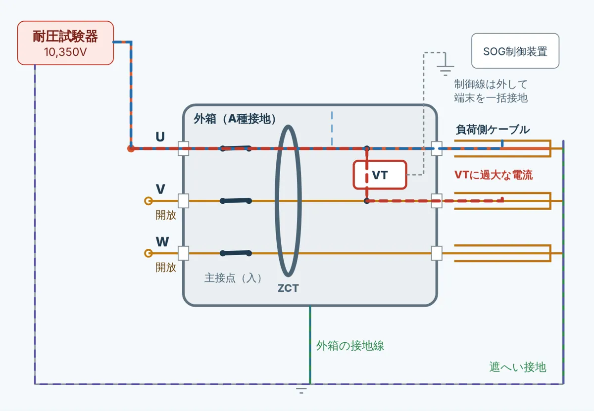
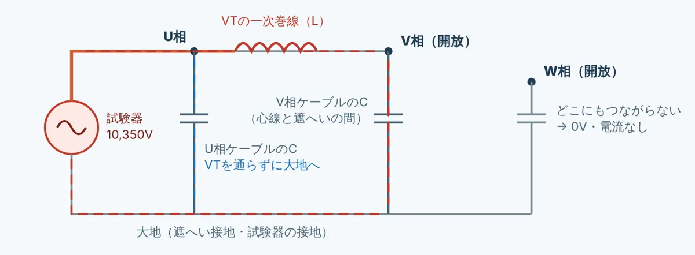
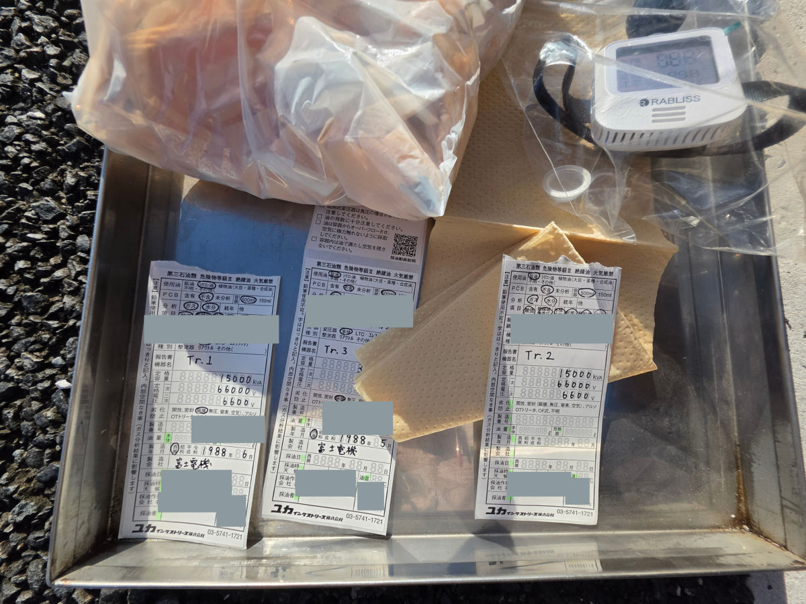
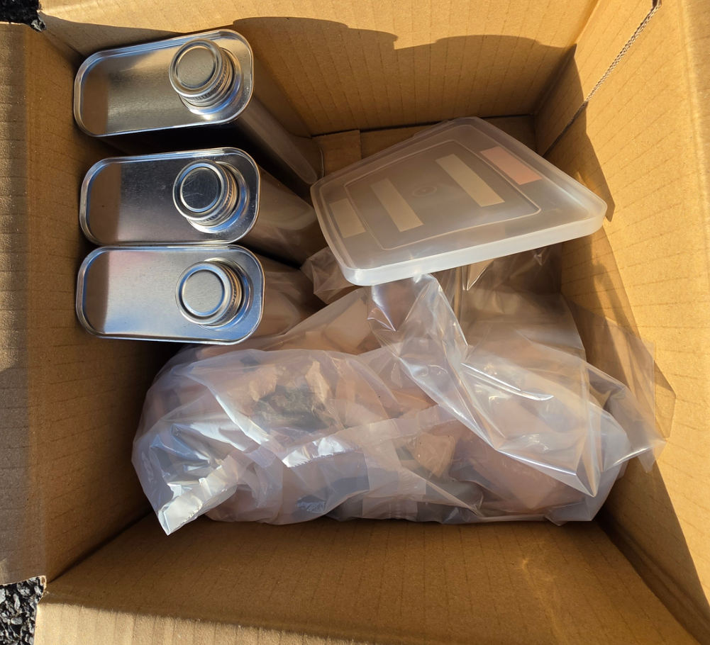
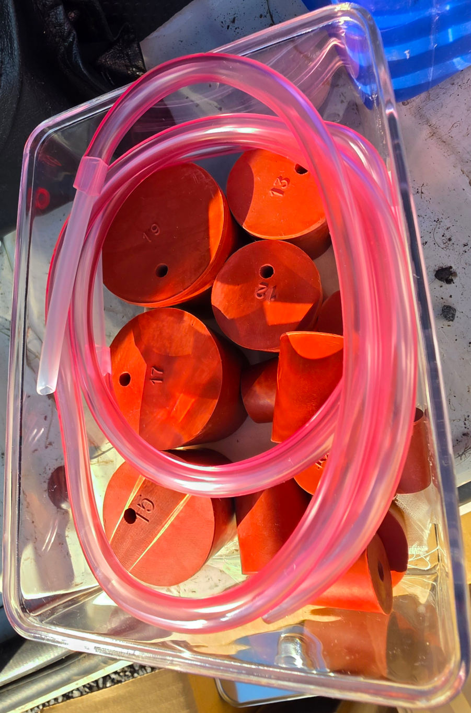

PUKAPUKA FIELD DIARY 📝 ぷかぷか日誌 現場で初めてやったこと、分からなかったこと、テンパったこと。その日のうちに残しておく自分用のフィールドノート。
最終更新：2026.10.07
記事を選ぶ IP-R2000のコンタクトモード（接点構造切換スイッチ）を全部まとめる。 「止めるか、鳴らすか」と「何を見て止めるか」の2つで選ぶ。 AUTO.Vの51連動試験は、なぜGCR-mini VSではできないのか。 「容量が足りない」の正体は、試験器が電流を押し込む力だった。 耐圧試験シミュレーターを作った。 VTの中を電流がどう流れるか、描いて確かめる。 IP-1110で絶縁耐力試験。充電電流88mAで、定格91mAぎりぎりだった。 VT内蔵PASを三線短絡で3相一括にする理由まで、一本につなげる。 絶縁監視と漏電探査の研修に行ってきた。 漏れ電流の通り道から、どこを測ってどう絞り込むかまで整理する。 保護継電器の研修に行ってきた。 受電形式から継電器試験まで、一本の線でつなげて整理する。 接地端子盤がないキュービクルで、A・B・C・D種の接地はどこを測る？ T-Eから零相電圧を入れると、高圧側へ「ステップアップ」する？ 電磁形EVTとコンデンサ形ZPDで答えが逆になる 特高変電所で、変圧器の採油（油中ガス分析）と接地抵抗測定。接地極側と設備側を分けて測る理由。 CTの磁気飽和は、結局なにが起きている？ B-H・ヒステリシス・励磁特性・膝点を一本につなげる 高圧ケーブルはなぜコンデンサになる？ 芯線・絶縁体・金属遮へい層・接地を「導体－絶縁体－導体」で理解する PASの過電流ロックはどう動く？ OCR・C接点・TC・Va/Vb/Vc・GR・SOを実機から理解する Igr絶縁監視装置は何を見ている？ Io・Iorとの違い、監視信号、漏電探査、異常表示まで PAS交換工事と耐圧試験。 「どこまで耐圧するか」を結線から考える。 初めてPASの上まで昇った。 セブンイレブン竣工検査の日。 RPR試験、分からないまま現場に立った日のこと。 OVRとOVGRを間違えて、V₀端子に10Vを入れてしまった話。 初めての系統確認。 トランシーバー片手に、けっこうテンパった。 初めてMEDIMULを触った日のこと。
2026.10.07｜継電器試験・IP-R2000
IP-R2000のコンタクトモード（接点構造切換スイッチ）を全部まとめる。
この記事について
IP-R2000の計器部にあるCONTACT MODE（接点構造切換スイッチ） は、左のTRIP側に3つ 、右のC.CHECK側に3つ 、ぜんぶで6ポジション あります。
🎛️ 1. まず全体像：6つのポジション
選び方は2段階。① 動作したら試験器を止めたい（時間を測る）か、鳴らすだけでいい（値を読む）か。 ② 継電器から出てくるのは「接点の開閉」「電流」「電圧」のどれか。
TRIP（トリップ）側
動作したら試験器の出力を止める
a/b (AUTO)
電圧のない接点の「開⇄閉」で止める
AC.CT
電流引外し形OCRの「電流」で止める
AC.DC.V
接点に出てきた「電圧」で止める
C.CHECK（接点確認）側
止めずに、ブザーで知らせるだけ
a/b
接点が閉じている間、ブザー
OFF
ブザーを鳴らさない（カウンタ不使用）
AC.DC.V
電圧が出ている間、ブザー
CONTACT MODE（接点構造切換スイッチ）の模式図。1つのつまみで、左のTRIP側3つと右のC.CHECK側3つを選びます。つまみの形や目盛の位置は実機と同じではありません。
取扱説明書の言葉では、TRIP側は「継電器の接点状態を内蔵マイコンが自動判定し、接点の状態が変化した時点で自動的に試験器出力を遮断」、C.CHECK側は「継電器が動作しても試験器の出力を遮断せずに、内蔵ブザーで動作の確認を行いたい時に使用」です。🟢 取扱説明書 2.2
⏱️ 2. TRIP側とC.CHECK側：止めるか、鳴らすか
表の内容は取扱説明書 1.6.3・2.2 の記載です。🟢
OFFはC.CHECK側にある 🟢
C.CHECK側にAC.CTはない 🟡 推定
🔍 3. 試験器は「何」を見て、動作したと判断するのか
TRIP側の3つは、トリップコード（No.2522）の先で何を見るか が違います。
a/b (AUTO)
試験器のトリップ入力
DC約150V
約0.5mA
電圧のない接点
開⇄閉が変わった瞬間に止める
例：継電器のa–c、外したT1–T2
CBの主接点・補助a接点
a接点かb接点かは自動で判定
AC.CT
トリップ入力
試験電流
動作すると
Tへ回る
C
T
CC
OCR（電流引外し形）
AC3.5A±10% 流れたら止める
トリップコードはT端子–CC端子へ
止めないと、継電器の接点が
開閉のアークで傷む
AC.DC.V
トリップ入力
約23kΩで聞くだけ
～ ／ ＋−
動作で電圧が出る
継電器の出力
電圧が出たら止める
AC：30V以上で有電圧
DC：24V以上で有電圧
入力はAC120V・DC150Vまで
a/b (AUTO)：試験器が自分で電圧をかけて、接点の開閉を見る
トリップコードの先の接点にDC約150V（流れる電流は約0.5mA） をかけて、閉じているか開いているかを見ます。a接点 （ふだん開いていて、動作で閉じる＝MAKE）でも、b接点 （ふだん閉じていて、動作で開く＝BREAK）でも、状態が変わった瞬間に止めます。どちらの接点かは内蔵マイコンが判定するので「AUTO」です。🟢 取扱説明書 1.2・1.6.2・2.2
CBの主接点も、閉じている（入）→ 引き外されて開く、なので同じように見られます。だからCB連動試験はどの継電器でもa/b(AUTO) です（5章）。
AC.CT：電流引外し形OCRが回してくる「電流」を見る
電流引外し形のOCRは、端子が C・CC・T の3つ（取扱説明書では「3端子OCR（電流引き外し式）」）。単体試験では、試験電流をC端子とCC端子の間に流し、トリップコードを T端子とCC端子 につなぎます。🟢 取扱説明書 3.3
電流引外し形は、ふだんCTの電流が C → コイル → CC と流れていて、動作すると内部の接点が切り替わり、その電流が T （引外しコイル側）へ回ります。試験では、動作した瞬間に試験電流そのものがトリップコードへ流れ込んでくる 。それを試験器が電流として受けて、AC3.5A±10%を超えたら止める、という仕組みだと読み取れます。🟡 推定
取扱説明書の警告（3.3.3） 🟢
a/b(AUTO)は「小さなDC電圧をかけて開閉を見る」方式なので、数A〜数十Aの試験電流が回ってくるT–CC間には向きません。電流を見るAC.CTが用意されているのはこのためだと思います。🟡 推定
検出の境目が3.5A±10%（3.15〜3.85A）なので、トリップコードを流れる試験電流が約3.9Aより小さいと、確実には止まらないと考えられます。5A定格のOCRなら、限時の300%・700%や瞬時の試験電流はこれより大きいので問題になりにくい。🟡 推定
AC.DC.V：接点に出てくる「電圧」を聞くだけ
継電器が動作すると、出力の端子に電圧が出てくる タイプ（継電器側の電源で引外し電圧を出すものなど）に使います。入力は約23kΩで、試験器からは何もかけずに電圧を聞くだけです。ACでもDCでも、入力範囲内なら同じ位置で使えます。🟢 取扱説明書 1.6.2・2.2
📏 4. AC.DC.Vの「有電圧／無電圧」の境目
AC.DC.Vには、有電圧とも無電圧とも決まらない不確定領域 があります。🟢 取扱説明書 1.6.2
スマホでは図を横にスクロールできます。
小さい電圧の出力は苦手 🟡 推定
上限を超える電圧はつながない 🟢 仕様
📋 5. 試験ごとの使い分け（取扱説明書の手順から）
トリップコード（No.2522）は白・黒・赤の3本。手順書どおりに並べると、こうなります。🟢 取扱説明書 3.3〜3.7
時間試験の流れ（取扱説明書の手順）SET にして試験電流を合わせる → STOPTEST へ
SETは0.25Ωの疑似負荷で電流を合わせる機能で、実際に継電器へ流れる電流とは少し違うことがある、と取扱説明書にあります。気になるときは継電器の動作をロックして、TEST側で電流を合わせます。🟢 取扱説明書 2.2
R相／T相切換スイッチ トリップコードでどちらを見るか （白＝R、黒＝T）も切り換えます。電流を流す相と見る相が、1つのスイッチで一緒に変わる。🟢 取扱説明書 2.2
CB連動は「主接点の開」を見る
🔗 6. AUTO.VのOCR（51）のときは？
同じ日に調べたAUTO.Vの51連動試験 につながる話です。AUTO.VはCT・OCR内蔵の電流引外し式 ですが、AUTO.Vの取扱説明書には、こう書いてあります。🟢 AUTO.V 取扱説明書 7.4.3
AUTO.V 取扱説明書（7.4.3 接続） 🟢
電流引外し式なのに、AC.CTではなく主接点（または補助開閉器のa接点）の開閉を見る 指定です。IP-R2000には「Break」という名前の位置はありませんが、a/b(AUTO)は閉→開（BREAK）の変化も見るので、IP-R2000ではa/b(AUTO) にあたると読みました。🟡 推定
AC.CTでは見えない電流 🟡 推定
主接点・a接点は「閉→開」
🧭 7. 迷ったとき・注意すること
接点構造が分からないとき AC.DC.V → AC.CT → a/b(AUTO) の順に切り換えて試験。🟢 🟡 推定
電流を出したまま切り換えない 🟢
所内電源で時間試験をするなら a/b(AUTO) 🟢
CB主接点にトリップコードをつなぐのは停電のときだけ 絶対に接続しない （高圧がかかっていて非常に危険）。🟢
OCRの単体試験で、試験器が止まらなかったら 🟡 推定
🛟 今日のうきわメモ
コンタクトモードは6つ。時間を測るならTRIP側、値を読むだけならC.CHECK側。
何を見て止めるか：接点の開閉はa/b(AUTO)、電流引外し形OCRの電流はAC.CT、出てくる電圧はAC.DC.V。
CB連動とAUTO.Vは、主接点の「閉→開」を見るのでa/b(AUTO)。
📚 根拠・確認状況
🟢 接点構造切換スイッチの6ポジションと使い方、検出の仕様（a/b・AC.CT・AC.DC.V）、ブザーとカウンタの表示、接点構造が分からないときの順番、各試験のトリップコードのつなぎ先とモード、所内電源・無停電時の警告：ムサシインテック「IP-R2000 マルチリレーテスタ 取扱説明書」4104-000ST026 第28版 1.2・1.4・1.6・2.2・3.3〜3.7（製品ページ ）🟢 AUTO.Vの試験でTRIP−Tを主接点または補助開閉器a接点につなぎ、コンタクトモードをBreakにすること、OCR定格0.1A：富士電機「高圧真空遮断器 MULTI.VCB シリーズ AUTO.V（固定形）取扱説明書」INB-F8663c 7.4🟡 AC.CTの仕組みの読み取り、C.CHECK側にAC.CTがない理由、AC.CTでは約3.9A未満を確実に検出できないこと、DC24V出力が境目にあること、IP-R2000でのBreakはa/b(AUTO)にあたること、迷ったときの順番の理由：自分の推定。 ※ 試験器の型式や版によって、スイッチの表記や仕様は異なります。実際の試験は、継電器・遮断器・試験器の取扱説明書、社内手順、作業責任者の指示に従ってください。本記事は自分用に整理した日誌であり、作業手順書ではありません。
2026.10.07｜継電器試験・試験器の容量
AUTO.Vの51連動試験は、なぜGCR-mini VSではできないのか。
この記事について
GR・DGRの試験ではいつも使っているGCR-mini VS 。それなのに、AUTO.Vの51の連動試験 だけは「VSじゃ容量が足りないからIP（IP-R2000） で」と言われました。容量って、VAのこと？ VSはそんなに小さい？ 調べてみると、足りないのはVAというより「電圧」 でした。
🎯 1. まず結論
AUTO.Vは、CTの電流そのもので遮断器を引き外す「電流引外し式」。連動試験では、試験器の電流がそのまま引外しコイルを動かす動力 になる。VSは押し込める電圧が約6Vしかないので、コイルまで電流を押し込めない。IPは100V級の電圧を抵抗で絞って出しているので、押し込める。
「容量」は2か所ある
電源
エコフローなど
例：1500VA
試験器
IP-R2000
スライダック → 抵抗
後ろに100V級
GCR-mini VS
電子回路・約6Vまで
AUTO.V
内蔵OCR
0.1Aで約7V
＋ 引外しコイル
（動作の瞬間に
加わる）
① 電源の容量
何VA供給できるか
② 出力の押す力
何Vで押し込めるか
AUTO.Vの連動で足りなくなるのは ②。
① が効いてくるのは、20〜50Aを流す大電流のOCR試験や、耐圧試験のとき。
⚡ 2. AUTO.Vは「CTの電流で遮断器を引き外す」
AUTO.Vは、富士電機の真空遮断器（MULTI.VCBシリーズ）で、CTとOCRを内蔵 しています。取扱説明書の仕様から、関係するところを抜き出すとこうです。🟢 取扱説明書
連動試験では、CTの役を試験器がする ことになります。試験器の電流で、OCRを動かして、さらに引外しコイルまで動かさないといけません。
① OCRが動作するまで：電流はOCRの入力だけを流れる（約7V）引外しコイル が加わるずっと大きな電圧 が要る
💪 3. 「容量」の正体は、電流を押し込む力
GCR-mini VSの電流出力の仕様はこうです。🟢 取扱説明書 1.5.2
3VAと聞くと、AUTO.Vの0.7VAより大きいので足りそうに見えます。でも3VAは「0.5A × 6V 」のこと。押し込める電圧の上限が約6V なので、0.1Aしか流さないときは、0.1A × 6V ＝ 0.6VA しか使えません。🟡 計算
押し込める電圧（目安）
0V 20 40 60 80 100 120V GCR-mini VS 0.5Aレンジ
約6V
AUTO.Vに要る 定格0.1A＋コイル
約7V ＋ 引外しコイルの分
IP-R2000 抵抗の後ろの電圧
100V級
7Vは「負担0.7VA ÷ 0.1A」の目安。100V級はOCR出力（20Ωレンジで6A）からの推定。
定格の0.1Aですら、押し込む電圧がぎりぎり足りません。そこに引外しコイルが加わると、まったく足りなくなります。VSは、負荷のインピーダンスが大きすぎると「A.OPEN」 （電流出力が開放状態もしくは容量オーバー）を出して、出力を止める作りです。🟢 取扱説明書 2.3
負担の0.7VAは「以下」という上限の値です。電流が大きいときの負担が比例して増えるとは限らないので、7Vは目安です。
🔧 4. IP-R2000ならできる理由
IP-R2000は、スライダックで100V級まで上げた電圧を、直列の抵抗（0.5〜20Ω）で絞って電流にする 方式です。抵抗が負荷より十分大きいので、引外しコイルが加わって負荷のインピーダンスが増えても、電流がほとんど落ちません。
IP-R2000の取扱説明書より 🟢
不安定なら抵抗レンジを1つ上げる
それでもばらつくなら
🟢 5. でも、IPでもDGR用の緑のコードを使うよね？
使います。IP-R2000の緑のコードは「No.2516 電流コード GCR/DGR 」。AUTO.Vの取扱説明書でも、1A未満の試験電流はGCR試験コネクタ から流す、とあります。
ただ、同じ「DGR用の電流出力」でも、中身がまったく違います 。IP-R2000のブロック図（1.7.2 地絡継電器試験）では、GCRの出力もOCRと同じく AC100V → スライダック → 抵抗器 → 電流計 → GCR端子 という道を通っています。0.5A・2.4Aのレンジは抵抗で電流の上限を決めているだけで、後ろにある電圧は100V級のままです。🟢 ブロック図
呼び名は同じ「DGR用」でも、押す力が20倍くらい違う。これが「VSでは容量が足りない」の正体です。
GR・DGRはなぜVSでいい？
AUTO.Vの51は違う
🔋 6. もうひとつの容量：電源（エコフロー）
エコフローのようなポータブル電源が1500VAで、IP-R2000の仕様が「消費電力 最大2kVA」なら、電源がボトルネックになる？ → 試験が1500VAを超える電力を要求したときだけ なります。2kVAは最大値 で、いつも2kVA使うわけではありません。
「電源から引く電力 ≒ スライダックの電圧 × 出力電流」として見積もった目安です。🟡
メーカーの推奨は2.4kVA以上 定格容量2.4kVA以上 を推奨。継電器試験では瞬時に20〜50Aを流すので、容量が小さいと電圧や周波数が変動して試験できないことがある、とあります。1500VAは推奨より小さいので、小さな電流の試験はできても、大電流のOCR試験や耐圧試験は大きい電源を用意するのが確実です。🟢
周波数を合わせる
電圧を下げる機能は切る 🟡
入力はAC90〜110V
WとVA 🟡
📝 確認しておくこと
AUTO.Vの形式（HA□A□-□6 か -□7 か）
試験の前に一次電流整定を「テスト」へ
トリップコードとコンタクトモード AUTO.Vの取扱説明書：TRIP−Tは主接点または補助開閉器a接点へ、コンタクトモードはBreak。IP-R2000での読み替えは
コンタクトモードの記事 へ。
🛟 今日のうきわメモ
「容量が足りない」は、VAよりも電圧。試験器が何Vで押し込めるかを見る。
電流引外し式の連動試験は、試験電流がそのまま遮断器を動かす動力。だから押す力のあるIPで。
容量は2か所。電源 → 試験器（エコフローのVA）と、試験器 → 継電器（出力の押す力）。
📚 根拠・確認状況
🟢 AUTO.Vの引外し方式・OCR定格0.1A・負担0.7VA以下・特性試験の方法（1A未満はGCR試験コネクタ）：富士電機「高圧真空遮断器 MULTI.VCB シリーズ AUTO.V（固定形）取扱説明書」INB-F8663c 表1・7.4🟢 GCR-mini VSの電流出力の容量と定格端子電圧、A.OPENの意味、付属コードの色：ムサシインテック「GCR-mini VS 取扱説明書」第21版 1.3.1・1.5.2・2.3（製品ページ ）🟢 IP-R2000の方式（電源抵抗部）、電流引外し式VCBとの連動試験の注意、ブロック図、付属コード（No.2516 緑）、発電機2.4kVA以上推奨：ムサシインテック「IP-R2000 マルチリレーテスタ 取扱説明書」第28版 1.3.1・1.6・1.7・2.1・3.3.6（製品ページ ）🟡 約7V（負担÷電流）、100V級（OCR出力の抵抗レンジと電流からの推定）、電源から引く電力の目安：自分の計算。 ※ 試験器・遮断器の型式や版によって仕様は異なります。実際の試験は、遮断器・試験器の取扱説明書、社内手順、作業責任者の指示に従ってください。本記事は自分用に整理した日誌であり、作業手順書ではありません。
2026.10.07｜サイトづくり・耐圧試験
耐圧試験シミュレーターを作った。
この記事について
きっかけは、「PASの耐圧試験で、内蔵VTがあるのに三線短絡しないでやるとどうなる？」という疑問でした。言葉で説明を読んでも、1相・2相・3相 の違いや、なぜVTに電流が流れるのか がどうしてもイメージできない。そこで、VTを実際に描いて、電流の通り道を動かして見る ページを作りました。
🗺️ 1. ページの中身
👆 2. まず試すこと
① PASの中の電流で「U相だけ」
② 「U＋V短絡」と「V＋W短絡」を比べる
③ シミュレーターで「1相・他相を開放」にして、ケーブル長を動かす
④ EVTで「中性点を接地したまま」

① U相だけに試験電圧をかけたとき。赤い線がVTの巻線を通る電流、青い線はケーブルの充電電流（VTを通らない）。 💡 3. 一番大事な理屈
VTは相と相の間 につながっている。VTの両端を同じ電圧にすれば、巻線に電流は流れない。それができるのが三線短絡の3相一括 。
U相だけに試験電圧をかけると、なぜV相のほうへ電流が流れるのか。
V相は開放でも、心線と遮へい層のあいだはコンデンサVTの一次巻線だけ

等価回路。U相のケーブルの電流（青）はVTを通らずに大地へ。V相のケーブルの電流（赤）はVTを通らないとたどり着けない。W相はどこにもつながらないので電流は流れない。 くわしい式と数値は、今日のIP-1110の日誌 とシミュレーターのページの「なぜV相へ流れる？ 」にまとめました。
🔧 4. 作りながら間違えて、直したこと
何度も「あれ？」と思って聞き直し、そのたびにページを直しました。同じところで迷う人もいると思うので、残しておきます。
⚠️ 5. このシミュレーターでできないこと
鉄心の飽和は計算していない
VTの特性は仮の値
実物の配置ではない
結論は仮の値によらない
🛟 今日のうきわメモ
分からないときは、描いて電流を流してみる。電流は一周できる道にしか流れない。
VTは相と相の間。両端をそろえれば無事。だから三線短絡で3相一括。
※ 本記事はシミュレーターを作った記録と、理解したことの整理です。実際の試験では、PAS・試験器の取扱説明書、社内手順、作業責任者の指示を確認してください。作業手順書ではありません。
2026.10.07｜現場・絶縁耐力試験
IP-1110で絶縁耐力試験。充電電流88mAで、定格91mAぎりぎりだった。
この記事について
今日は、PASと負荷側ケーブルの絶縁耐力試験 。試験器はムサシインテックのIP-1110 （一体型の交流耐電圧試験器）を単体で使い、ケーブル端末の3心を黄色い線で三線短絡 して、3相一括 で10,350Vを10分間かけました。結果は異常なし。
ただ、終わってから数字を見直すと、試験器の容量がほぼいっぱい だったことに気づきました。もうひとつ、午前中に調べていた「VT内蔵PASは、なぜ1相ずつ試験してはいけないのか」も、今日の試験とつながる話なので、まとめて整理します。
🟢 公開資料で確認 🔵 今日の現場の値 🟡 自分の計算・考え
📟 1. 今日の数値
🔵 現場の値 試験時間は10分。PASは「入」、負荷側ケーブルを含めて試験。
🔍 2. チェッカーは91mA、実際は88mA。わざと高めに出している？
チェッカーの91mAは、測った静電容量からの計算値 です。🟡 計算
I ＝ 2πfCV ＝ 2π × 50 × 0.028μF × 10,350V ≒ 91.0mA
実測から逆に静電容量を出すと、10.38kVで88.0mAなので
C ＝ 88.0mA ÷（2π × 50 × 10,380V）≒ 0.0270μF
10,350Vに直すと ≒ 87.8mA（チェッカーより約3.5%少ない）
差の半分は「表示の丸め」 89.4〜92.7mA 。これだけで±1.8%くらい動く。
残りは計器の誤差の範囲 🟢 。チェッカーはDC15V という低い電圧で容量を測っている 🟢 。両方の誤差が重なれば、このくらいの差は出る。
わざと高めに出しているか は、公開されている資料（メーカーの製品情報・販売店の仕様）では確認できませんでした。チェッカーの確度も見つからず。ただ、結果として高めに出るなら、試験器の容量を見積もるときには安全側 です。
⚡ 3. IP-1110の容量は、ほぼいっぱいだった
⚠️ 気になった2つのこと 一次電流10.00Aは「ちょうど10A」か「振り切れ」か分からない。 一次電流計は10.00Aまでしか表示しないので、それ以上流れていても10.00Aと出ている可能性がある。
遮断の余裕がほとんどない。 100mA設定でも、±20%なので80mAで切れることもありうる 。88mA流れて切れなかったのは、この個体がたまたま80mAより上で動いているから。設定は100mAが上限なので、これ以上の余裕は作れない。
1,000は「W」ではなく「VA」。 100V × 10A ＝ 1,000VA は皮相電力。負荷はほぼコンデンサなので、有効電力（W）はずっと小さい。出力913VAに対して入力が約1,000VAなのは、入力が100Vだとすると、理想なら約9.1Aのところに変圧器の励磁電流や損失のぶん が乗っているから。🟡 計算
IP-1110だけで試験できる静電容量の上限
定格91mAから逆算すると 🟡 計算
50Hz：C ＝ 91mA ÷（2π × 50 × 10,350V）≒ 0.028μF
60Hz：≒ 0.023μF
今日のチェッカーの表示がちょうど0.028μF 。まさに上限でした。ケーブルの長さに直すと、だいたいこのくらいです。
1心の静電容量はSFCCカタログの値（充電電流のページ と同じ）。3心ぶん・試験電圧10,350V・PASや端末の容量は含まない目安。実際はチェッカーで測った値（PAS込み）で判断する。
上限を超えそうならリアクトル 🟢 。リアクトルで補償しても、ケーブルに流れる充電電流そのものは減らない（試験器側の電流が減る）。
続けて試験するなら10分休む 🟢 。
電源は10A流しても下がらないところから 🟡 。
次からの目安 0.026μF（50Hz） を超えたら、リアクトルを持っていく 🟡 自分の目安 。
🔬 4. そもそも、耐圧試験は何を見ている？
今日の88mAは、ほとんどが充電電流 です。高圧ケーブルは、導体と遮へい層が電極、絶縁体がそのあいだ のコンデンサ。遮へい層は接地されているので、電流は 導体 → 絶縁体 → 遮へい層 → 遮へい接地線 → 大地 → 試験器 と一周します。
絶縁体の悪いところから本当に漏れる電流（抵抗ぶん）は、健全ならμAの単位でごくわずか。しかも充電電流と直角に足し算されるので、多少増えても電流計の値はほとんど変わりません。耐圧試験は「この電圧を10分かけても、絶縁が破れないか」 を確かめる試験で、破れると電流が急に増えて試験器が止まります。劣化の具合を見るのは、絶縁抵抗測定などの役割です。🟡 整理
🧲 5. VT内蔵PASは、三線短絡で3相一括
PASの内蔵VT（SOG制御装置の電源用）は、主要メーカーの取扱説明書では負荷側のU相−V相の間に1台 つながっています（6,600/105V・25VA の例）。🟢
3相一括なら、U・Vが同じ電圧なのでVTの巻線に電圧はかかりません。ところがU相だけ に試験電圧をかけると、VTが焼けます。
なぜ、電圧をかけていないV相のほうへ電流が流れるのか
① V相は開放でも、心線と遮へい層のあいだはコンデンサVTの一次巻線だけ VTの一次巻線 → V相 → V相ケーブルのC → 大地 → 試験器、と一周する
VTにかかる電圧 ＝ 10,350V × XL ÷（XL − XC ）
例：38mm²・30m（XC ≒ 330kΩ）、XL を仮に3.3MΩとすると ≒ 11,500V（定格6,600Vの約1.7倍）
VTは定格の1.2倍くらいを超えると鉄心が飽和して、XL が急に小さくなり、電流が増えます。上限の目安は「V相ケーブルの充電電流」＝ 約31mA。25VAのVTの定格一次電流 約3.8mAの約8倍 で、10分間で巻線が焼けます。🟡 計算（XL は仮の値）
U相の電流はVTを通らない
VTの二次側の接地は関係ない
パターン別
「U＋V短絡、そのあとW」で分けても無事なのは、VTがU−V間にあると分かっているときだけ 。VTがつながる相はメーカー・型式で違うので、取り違えると焼損します。だからメーカーは「三相一括で実施」「一相ごとの試験は行わない」 と指示しています。🟢
「他の相を接地」になってしまう場面 外し忘れたまま 1相だけ外して試験電圧をかけると、U相−V相のあいだに試験電圧がそのままかかり、VTが過励磁になります。ほかにも、リアクトルがなく容量が足りないからと1相ずつに分けた結果、VTが焼損してPASが爆発した事例が紹介されています（下の根拠資料）。
VT単体のとき
一次のU・Vを短絡して試験電圧をかけ、二次のu・vを短絡して外箱と一緒に接地。試験が終わったら二次の短絡線を必ず外す （付けたまま受電するとVTが焼ける）。U端子だけにかけると、V端子の先に何がつながっているかで結果が変わる「設備まかせ」の試験になってしまいます。🟡 整理 → VT単体の電流の流れ
🧰 6. 3相一括でも気をつけるもの：EVT・LA・制御線
→ EVTの電流の流れ → 10/4の日誌：電磁形EVTとコンデンサ形ZPD
🤔 持ち帰った疑問
一次電流10.00Aは振り切れ？
CC-50MNの確度
リアクトルの手配
VTが2台のPASはある？
🛟 今日のうきわメモ
IP-1110単体の上限は0.028μF（50Hz）。今日はちょうどそこだった。チェッカーで0.026μFを超えたらリアクトル。
電流計の88mAは、ほとんどが充電電流。耐圧試験は「破れないか」を見る試験。
VTは相と相の間。両端を同じ電圧にすれば無事。だから三線短絡で3相一括。
※ 試験器の容量、試験の結線、VT・EVT・LA・制御線の扱いは、機器と型式によって異なります。実際の試験では、試験器・PAS・各機器の取扱説明書、社内手順、作業責任者の指示を確認してください。本記事は自分用に整理した日誌であり、作業手順書ではありません。
2026.10.07｜研修・絶縁監視と漏電探査
絶縁監視と漏電探査の研修に行ってきた。
この記事について 活線での測定を含む話です。 実際の作業は、測定器の取扱説明書、社内手順、現場責任者の指示に従います。
今日は一日、絶縁監視装置と漏電探査の研修 でした。絶縁監視装置のしくみ、警報が出たときの考え方、漏電探査の進め方、探査のヒント、探査中の事故事例、という流れ。
8月にIgr絶縁監視装置の記事 を書いたけれど、今回はその手前の「漏れ電流はそもそもどこを通るのか」 から、もう一度つなげ直します。
① 漏れ電流はどこを通る？
🟢 公開資料で確認 🔵 研修で聞いた 🟡 自分の考え・例
🌍 1. 漏れ電流の通り道：最後は必ずB種接地線を通って帰る
使っている機器の絶縁が悪くなると、電気が機器の外箱へ漏れます。漏れた電流は、機器の接地（D種など）→ 大地 → 変圧器のB種接地 → 変圧器 の順に流れて、変圧器へ帰ってきます。
漏れ電流の通り道（説明用の図）
変圧器
低圧側
非接地側（対地電圧あり）
接地側（対地電圧 0V）
使用機器
絶縁不良
EB
ED
検出用CT
（B種接地線1本を挟む）
漏れ電流：機器 → ED → 大地 → E B → 変圧器
ここが大事なところで、どの機器から漏れても、帰り道はB種接地線の1本にまとまります 。だから、B種接地線に1つCTを付けておけば、その変圧器から先の低圧電路全体の漏れ電流（Io）を見張れます。絶縁監視装置がB種接地線にCTを付けるのはこのためです。🔵 研修
⚠️ 接地側で地絡しても、漏れ電流は流れない B種接地は、低圧電路の1線（単相3線なら中性線、三相3線なら1つの相）を大地とつないでいます。その線は大地との電圧が0V なので、そこで絶縁が悪くなっても、電流を押し出す電圧がなく、漏れ電流は流れません。🔵 研修
つまりIo（漏れ電流）を見る方式では、接地側の絶縁不良は見えません 。これが後で出てくるIgr方式との大きな違いになります。
🔍 2. 「検出用CT」と「ZCT」はどう違う？
テキストでは、B種接地線に付けるものを「検出用CT」 と書いていました。漏電遮断器の中にあるのはZCT（零相変流器） 。どちらも漏れ電流を測るのに、名前がちがうのが気になったので調べました。
CTとZCT：何本の線を通すか（説明用の図）
B種接地線に付けるCT
Io
通すのは接地線1本だけ
流れているのが漏れ電流そのもの
ZCT（零相変流器）
電路の全部の線をまとめて通す
行き・帰りは打ち消し、差（零相電流）だけ残る
自分の結論： B種接地線には漏れ電流しか流れないので、打ち消し合いのしくみは要らず、1本を測るふつうのCT（分割形）で足ります 。だから「検出用CT」という呼び方は構造としては正確です。🟡 自分の考え
ただ、測っている中身は結局同じ零相電流（Io） で、mAを測る高感度のCTは作りもZCTとよく似ています。資料やメーカーによっては接地線用のものもZCTと呼んでいるので、「ZCTと書いてあったら間違い」というほどの話ではありません 。8月の記事でもZCTと書いています。
リーククランプで測るときも同じ考え方です。接地線1本を挟む ときは普通のCTの使い方、幹線や分岐の全部の線をまとめて挟む ときはZCTと同じ原理です。まとめて挟むときに1本でも外れていると、負荷電流がそのまま表示されてしまいます。
ZCTの説明は三菱電機の製品ページ「全ての一次側電線を貫通させて地絡事故時の零相電流（各相電流のベクトル和）の検出に使用」で確認しました。
📐 3. Io・Ior・Igr：何を測って見張るか
Io は「抵抗ぶん」と「静電容量ぶん」の合計
電線と大地の間には、絶縁抵抗 R と 対地静電容量 C の両方があります。だから漏れ電流 Io には2種類が混ざっています。
Io をベクトルで見る（説明用の図）
電圧 V の向き
90°進み
Ir：絶縁抵抗ぶん
Ic：静電容量ぶん
Io
見るべきなのは Ir
Ir：絶縁が悪いと増える
Ic：絶縁が良くても流れる
（長いケーブル、ノイズフィルタ、
インバータ機器などで増える）
Io ＝ Ir と Ic のベクトル和
絶縁が悪くなって増えるのは Ir のほう。ところが Io だけを見る方式では Ic も一緒に測ってしまうので、静電容量の大きい設備では、絶縁が悪くなくても警報値に届いてしまう ことがあります。研修では、NC工作機械・コンピュータ・無停電電源装置のような機器が増えて、こういう設備が多くなっている、という説明でした。🔵 研修
そこで「抵抗ぶんだけを取り出したい」という考えから、Ior方式 とIgr方式 があります。
表の「接地側」と「弱いところ」は研修の説明と、下の公開資料をもとに自分でまとめたものです。
Ior：位相を使って計算する
三和電気計器の資料では、Io ＝ Ior ＋ Ioc （ベクトルの和）として、次の式が示されています。θ は基準電圧と Io の位相角です。🟢 メーカー資料
単相：Ior ＝ Io × cosθ
三相：Ior ＝ Io × sinθ ÷ cos30°
単相なら「電圧と同じ向きの成分＝cos」でわかりやすい。三相の式に sin と cos30° が出てくるのは、どの電圧を基準に取るかによるもので、式は機器ごとの決まりに従います。🟡 自分の考え
三相3線（1線接地）では、接地していない2つの相がそれぞれ大地へ静電容量の電流を流します。2つの相の静電容量が等しければ、その合計の向きが決まるので、計算で取り除けます。かたよっていると、静電容量ぶんの一部が抵抗ぶんのように見えてしまう 。これが「不平衡だと誤差が出る」の理由だと理解しました。🟡 自分の考え
Igr：目印の付いた電気を流して追う
監視電源：商用（50/60Hz）とちがう低い周波数の、小さな電圧
なぜ接地側の絶縁不良も見えるのか： 監視電圧はB種接地線（電路と大地の間）に入れるので、監視信号から見ると、接地側の線も含めて全部の線が大地に対して同じ監視電圧 になります。三相でも単相でも、監視電源から見れば単相の回路と同じ。だから接地側で絶縁が悪くなっても、監視周波数の電流は流れて見えます。🔵 研修
小さな監視電圧で測って、実際の電圧に換算する
絶縁抵抗 R が同じなら、抵抗ぶんの電流は電圧に比例します（I ＝ V ÷ R）。だから、監視電圧で測った値（igr）を、実際の対地電圧の値に換算 します。
Igr ＝ igr × （電路の対地電圧 ÷ 監視電圧）
例：監視電圧 0.1V の機種 1000 2000 監視電圧が機種でちがえば倍率も変わります。周波数・電圧は機種ごとに確認（8月の記事の「20.3Hz・0.1Vは共通仕様ではない」）。「200V回路」は、三相3線200V（1線接地）のように非接地側の対地電圧が200Vになる回路のこと。単相3線100/200Vは線間200Vでも対地は100Vです。
クランプ式の探査器には、監視周波数の電流をそのまま測る Ig （抵抗ぶん＋静電容量ぶんの合成）と、そこから抵抗ぶんだけを分けた Igr があります。Ig が大きくても Igr が小さければ、それは静電容量ぶん 。探査器の表示がどちらなのかを意識して読みます。🔵 研修
Igrの監視信号の作り方・異常表示の切り分けは、8月の記事 に詳しく書いたので、そちらへ。
🚨 4. 警報が出たら：いきなり復帰しない
絶縁監視装置は、漏れ電流が設定値を超えると警報を出します。国の様式（設備条件確認書）では、点検の間隔を延ばす条件の1つとして、低圧電路の絶縁状態を監視する装置の警報設定値は50mAを上限 とされています。🟢 公開資料
研修で教わった考え方を、自分の言葉で並べるとこうなります。🔵 研修
① どの装置（Io / Igr）の、どのCH（変圧器）で、どんな警報か確認
復帰する前の表示には、「いつ・どのくらい続いたか」の手がかりが残っています。消してしまうと原因を追う情報がなくなるので、まず記録 。
漏れが大きすぎるときは Igr が使えないことがある 商用周波数の Io で探します 。🔵 研修 （大電流で監視出力を止める機能は、8月の記事で書いたメーカー資料にもあります）
🧭 5. 探査の進め方：幹から枝へ
漏電探査は、大きい範囲から小さい範囲へ 。いきなり分電盤の回路を一つずつ当たるのではなく、まず「どの変圧器か」を決めます。
幹から枝へ絞る（数値は説明用の架空の例）
① B種接地線
Tr1 5mA
Tr2 150mA
Tr3 4mA
② 幹線
分電盤A 6mA
分電盤B 140mA
分電盤C 3mA
③ 分岐回路
回路1 2mA
回路2 3mA
回路3 130mA
回路4 2mA
④ 負荷
回路3の先の機器・配線を調べる
合計が合わないときは、測っていない回路や、別の接地経路がないかも疑う。
レンジは回路の電圧に合わせる 🔵 研修
CTの向きをそろえる 🔵 研修
注入トランスから離して挟む 🔵 研修
全部の線をまとめて挟む 🟡 自分の考え
探査器には、その場で測るクランプのほかに、何時間も記録できる記録型 や、設定値を超えたらランプが点く表示器 もあります。いつ漏れているか分からない「たまにしか出ない警報」には、記録型を置いて時間の傾向を見る、という使い方。🔵 研修
🌦️ 6. 探査のヒント：警報が「いつ」出ているか
測ったときに漏れていないと、探査で見つけられません。そこで、警報が出るタイミングと設備の様子 から原因を推理します。研修では次の5つに分けていました。🔵 研修
お客さまにお話を伺うと、ヒントになることが多い。 「最近つないだ機器はありますか」「雨の日に何か変わったことは」「その時間に何をしていますか」。警報の時刻と、お客さまの生活や作業のリズムを重ねると、測る場所がぐっと絞れます。
研修では、ビルの平面図に分電盤の位置を書き込んで、「この分電盤の先には何があるか」を考える練習もありました（図面は社内資料なので載せません）。
⚠️ 7. 探査中の事故：測ることに集中すると、手元の危険を見落とす
研修では、探査中に受電設備の中で手が高圧の充電部に触れてしまった事例 を教わりました。CTを付け直そうとしていたときのことで、手を伸ばした先に高圧の端子があった、という内容でした。🔵 研修 （事例の詳細は社内資料なので書きません）
手を入れる前に見る
保護具を着ける
無理な姿勢でやらない
数字を追っているときが危ない
🤔 持ち帰った疑問
検出用CTとZCT
Iorの三相の式
Iorの誤差はどれくらい？
電技解釈の「1mA」とIor
🛟 今日のうきわメモ
漏れ電流は、どこから漏れても最後はB種接地線を通って帰る。だから接地線を測れば全体が見える。
Ioは「抵抗ぶん＋静電容量ぶん」。見たいのは抵抗ぶん。Iorは位相で計算、Igrは目印の電気で追う。接地側まで見えるのはIgrだけ。
探査は幹から枝へ。そして、数字を追う前に手元を見る。
※ 絶縁監視装置の方式・警報の設定・監視周波数・換算のしかた・探査器の使い方は、機種とメーカーによって異なります。実際の探査では、測定器の取扱説明書、社内手順、現場責任者の指示を確認してください。本記事は研修の内容を自分用に整理した日誌であり、作業手順書ではありません。
2026.10.05｜研修・保護継電器
保護継電器の研修に行ってきた。
この記事について
今日は一日、保護継電器の研修 でした。内容は「受電形式」「保護協調」「遮断器の引外し方式」「電気計算」「配線演習」「継電器試験（OCR・DGR）」の6つ。参考としてUVR・OVRの試験も教わりました。明日は確認テストがあるので、その復習も兼ねてまとめます。
バラバラの単元に見えたけれど、通して聞くと1つの流れ になっていました。
① 受電形式：何が事故電流を切るのか
🏗️ 1. 受電形式：主遮断装置で3つに分かれる
高圧の受電設備は、主遮断装置（事故のときに受電を切る装置）が何か で、CB形・PF・CB形・PF・S形 の3つに分けられます。
キュービクルの容量の上限 4,000kVA に引き上げられた。キュービクルではCB形 4,000kVA 、PF・S形 300kVA まで。
PF・S形で気をつけること 高圧電動機 がある設備では、始動電流でヒューズが溶断するおそれがあるので採用しない。主遮断装置に非限流ヒューズを使うと限流効果が期待できないので、設備の過電流強度に注意する。
どの形式でも、守るべき順番は同じです。需要家の高圧回路で短絡したら、電力会社の配電用変電所のOCRが動く前に 、需要家のOCR＋CB（またはPF）が事故電流を切る。低圧回路の事故なら、配線用遮断器（MCCB）が 上位のOCRやPFより先に切る。この「順番」が次の保護協調の話です。
🤝 2. 保護協調：事故は自分の構内で止める
保護協調は、上位（電源に近い側）と下位（負荷に近い側）の保護装置の感度と動作時間を整えて、事故の回路だけを確実に切り、健全な回路には送電を続ける こと。高圧需要家なら、構内の事故は構内の保護装置で処理して、電力会社の配電線に波及させない のが原則です。
低圧の事故 → 配線用遮断器（MCCB）が先に切る
保護協調の種類
ほかに、雷などの異常電圧に対する絶縁協調もあります。
OCRの特性：反限時・定限時・瞬時
OCRは反限時と定限時の両方の特性 をもつタイプです。電流が大きいほど速く動く反限時 の部分が過負荷 を、大電流の領域で動作時間がほぼ一定になる定限時 の部分と瞬時要素 が短絡 を受け持ちます。
瞬時要素で上位と協調
動いてはいけない電流
地絡保護：ZCT・ZPD・DGR
ZCT（零相変流器） は、3相の電線をまとめて通す変流器です。地絡がなければ Ia＋Ib＋Ic＝0 で磁束が打ち消し合うけれど、地絡で電流Igが大地へ漏れると打ち消しが崩れて、二次（k-l）に信号が出ます。kt・ltは試験用の端子 で、継電器試験ではここから試験電流を入れます。
ZPD（零相基準入力装置） は、高圧の各相と大地の間をコンデンサで分圧して零相電圧V₀ を取り出し、DGRへ送る装置です。完全地絡のときの零相電圧は 6,600 ÷ √3 ≒ 3,810V 。試験端子T-Eから電圧を入れたときにどうなるかは、EVTとZPDの記事 にまとめています。
なぜGRではなくDGRなのか。 地絡電流は、電線と大地の間の対地静電容量 を通って戻ってきます。構内のケーブルが長いと、構外（配電線側）で地絡したときにも、構内ケーブルの静電容量を通る電流がZCTを流れる 。方向を見ないGRだと、これで不要動作（もらい事故）することがあります。DGRは零相電圧V₀を基準に、ZCTを通る電流がどちら向きか を見て、構内の事故だけで動きます。
① 構内で地絡 → DGRは動作 配電線側 構内 Ig1 Ig2 ZCT C1 C2 ✕ 地絡 ZCTを通るのは Ig1（構内向き）
② 配電線側で地絡 → DGRは不動作 配電線側 構内 Ig2 Ig1 ZCT C1 C2 ✕ 地絡 ZCTを通るのは Ig2（逆向き） C1：配電線側の対地静電容量、C2：構内ケーブルの対地静電容量。①構内で地絡 すると、配電線側のC1を通って戻る電流Ig1がZCTを構内向きに通る（構内のC2を通る電流Ig2は構内だけで回り、ZCTを通らない）。②配電線側で地絡 すると、構内ケーブルのC2を通る電流Ig2がZCTを逆向きに通る。V₀を基準にすると、①と②でI₀の向きが逆（位相が約180°ちがう）。方向を見ないGRは、②でもIg2が大きいと動いてしまう（もらい事故）。
自分で描き直した原理図。電流の向きだけを表していて、大きさの比ではない
位相で見ると、構内事故と配電線事故では零相電流の向きが逆で、位相が約180°ちがいます 。DGRの位相特性は、構内事故の電流が来る側を動作域 、配電線事故の電流が来る180°付近を不動作域 にして、その間に許容範囲をとっています。だから試験でも、同相（0°）で動くこと と180°で動かないこと の両方を確かめます。
高圧受電設備規程では、地絡遮断装置から負荷側の対地静電容量が大きいときはDGRが推奨。構内ケーブルが一定の長さ以内ならGRでよいという目安もあると聞いた（数字は規程で確認する）。
SOG制御装置の「SO」
SOは Storage Over Current の略で、「蓄勢＋過電流」という意味。PASやUGSは負荷電流の開閉はできても、短絡電流は遮断できません 。そこで短絡電流が流れたときは、次の順番で動きます。
過電流を検出して「開放する」を記憶し、待機
1分後の再送電が成功すれば、波及事故の扱いにはならない 。PASの中で実際にどう動くかは、PASの過電流ロックの記事 で整理しています。
⚡ 3. 遮断器の引外し方式：どうやって遮断器を動かすか
保護継電器のしくみは、検出部 （CT・VTで電流をおおむね5A、電圧を110Vに変成）→ 判定部 （保護継電器）→ 動作部 （遮断器の引外し）の3つに分けられます。継電器が「切れ」と判断したあと、遮断器の引外しコイル（TC）を何のエネルギーで 動かすかで、引外し方式が分かれます。
ふだん CT OCR b接点 TC 電流はb接点を通り、TCを通らない OCRが動作したとき CT OCR b接点 TC b接点が開き、電流がTCへ → 引外し 自分で描き直した原理図（TC：遮断器の引外しコイル）。実際の端子の名前や内部の配線は、機種ごとの展開接続図で確認する
電流引外しは、ふだんはOCRのb接点（ふだん閉じている接点） がTCを短絡していて、CT二次電流はTCを通らずにCTへ戻っています。OCRが動作するとb接点が開き、行き場を失ったCT二次電流がTCに流れて遮断器を引き外す。事故電流そのものが引外しのエネルギー なので、引外し用の電源がなくても動くのがポイントです。
🧮 4. 電気計算
変圧器の定格電流
単相 I ＝ S ÷ V三相 I ＝ S ÷（√3 × V） V：線間電圧、I：線電流 238 A 412 A
研修中のメモ：低圧側の定格電流に0.052を掛けると、B種接地線の太さの目安（mm²）になり、その直近上位の電線サイズを選ぶ（例：238A × 0.052 ≒ 12.4 → 14mm²）。根拠の式と表は内線規程で確認する。
V結線の容量
V結線は、線間電圧＝相電圧、線電流＝相電流になるので、S ＝ √3 × E（相電圧）× I（相電流）。同じ容量の2台なら、√3 × 1台分の容量 です。
容量がちがう2台 なら、√3 ×（小さい方）＋（大きい方 − 小さい方） 。三相として使える分は小さい方で決まり、大きい方の残りを足す、と覚えました。
例：75kVA × 2台 → √3 × 75 ≒ 129.9 → 129kVA 136kVA 契約に使う容量は、小数点以下を切り捨て。
OCRタップ計算（Imax方式）
単相Trと三相Trが混ざっていると、相によって流れる電流がちがいます。いちばん大きい相 に合わせてタップを決めるのがImax方式です。
三相Trは容量を3等分して各相間へ、単相Trはつないだ相間へ
例（架空の設備） ：三相Tr 150kVA、単相Tr 100kVA（RS間）、単相Tr 50kVA（TR間）、CT 50/5A3.5A 、1A刻みの目盛（誘導形に多い）なら 4A
なぜ大きい2つだけを使うのか、全部を三相とみなして計算すると何がまずいのかは、OCRタップ計算ページに追記しました。同じ例を計算機に入れるボタンもあります。→ OCRタップ計算：Imax方式
契約電力（kW）から求める式も紹介されました。I ＝ 契約電力 ÷（√3 × 6.6 × 力率0.9）× 余裕の倍率 × 5 ÷ CT一次。余裕の倍率を掛けて直近上位のタップを選ぶ考え方は、OCRタップ計算ページの「契約電力」ルートと同じです。
容量圧縮（設備容量kVA → 最大電力kW）
設備容量をそのまま最大電力とすると大きすぎるので、容量が大きくなるほど低い割合を掛けて「最大でもこのくらい」と見込む計算です。契約設備容量の計算や、CT・OCRの整定のときに使います（研修では参考として紹介）。
計算方法2の「＋5」「＋15」「＋45」「＋105」は、手前の区分を高い割合で数えたぶんの差をまとめた数です。たとえば100kVAまでの式は全体を70%で数えているので、最初の50kVAを80%で数えたぶんの差 50 × 0.1 ＝ 5 を足している。だからどちらの方法で計算しても同じ答え になります。
例：400kVA → 方法1：40 ＋ 35 ＋ 120 ＋ 50 ＝ 245kW ／方法2：400 × 0.5 ＋ 45 ＝ 245kW 425kW ／方法2：800 × 0.4 ＋ 105 ＝ 425kW 小数点以下は四捨五入。V結線の契約容量（切り捨て）と丸め方がちがうので注意。
🔌 5. 配線演習：CTからOCR、そしてTCへ
電流引外し方式のOCRを、静止形（オムロン K2CA形） と誘導形（日立 IO形） で、CTからの配線を実際にたどりました。
CT二次
静止形が電源なしで動く理由 検出用 の変流器と、自分の回路を動かす電源用 の変流器がある。CT二次電流から自分の電源も作るので、引外し用の電源がなくても動ける。
CTTの役割 CT側を短絡してからOCR側と切り離す と、CT二次を開放せずに、OCR側へ試験電流を入れられる。
線を外すなら線番札
🧪 6. 継電器試験：本当にそのとおり動くか
どの試験にも共通する注意
停電と電源 全停電 で、試験器から電源を供給する他電源方式 で行う。商用電源から試験器の電源をとるときは極性 に注意する。
整定値は作業の前と後 作業前と作業後に作業責任者と作業者で相互確認 する。試験で動かした値を戻し忘れない。
線を外すとき
連動と接点を先に知る
実習は、作業指示係 （作業責任者として準備と試験を指示し、判定する）・測定器操作係 ・継電器・遮断器操作係 ・記録係 を、グループで順番に担当しました。ほかの人は試験中に助言する役です。
OCR（過電流継電器）試験 ── JIS C 4602
準備では、整定値を確認したあと、CTTの接続を外してCT側を短絡用バーで短絡 し、OCR側の端子に試験器の電流コードをつなぎます。遮断器が動いたタイミングは、遮断器に取り付けた振動センサ で試験器に伝えて、時間を測ります。
R相とT相の両方で行い、最後に整定値（タップ・レバー・瞬時）を確認して終了。
⚠️ 最小動作電流と始動電流はちがう 始動電流 ：誘導形OCRの円板が動き始める 電流。最小動作電流 ：円板が回って主接点が閉じる 最小の電流。試験で測るのは最小動作電流。静止形なら、経過時間のインジケータが100%まで進んで動作したときの電流。
誘導形 円板を指で軽く押さえる 。
静止形 ロックボタンを指で軽く押さえる （ダイヤルにロック位置がある機種もある）。
ロックするのは、300%に合わせている途中で動作してしまうと時間が測れないから。合わせ終わったら出力を止め、カウンタをリセットしてから一気に流します。
限時動作時間の判定式 N3 − N/10 × T10.3 ）÷ T10.3 × 100| ≦ 17%T10.3 ：レバー10で300%を流したときの公称動作時間（銘板の特性曲線）N3 ：レバーNで300%を流したときの実測時間
実習のOCR（静止形）：タップ4A・ダイヤル3・瞬時20A 3.6〜4.4A 17〜23A 10.3 ＝10秒）：10 ± 1.7秒 → 8.3〜11.7秒 約1.3〜4.7秒
気づいたこと： 許容幅は「レバー10のときの時間の17%」なので、レバーを小さくしても幅は±1.7秒のまま。ダイヤル3なら公称3秒に対して±57%くらいになります。「±17%」と割合で覚えるより、式で覚えたほうが迷いません。
DGR（地絡方向継電器）試験 ── JIS C 4609
準備では整定値（零相電圧・零相電流・動作時間）を確認し、DGRの試験用端子（電圧：T・E、電流：kt・lt）に試験器の電圧・電流のコードをつなぎます。
実習のDGR：V₀ 5%・I₀ 0.2A・0.2秒 190V （判定 ±25% → 約143〜238V ）285V 0.18〜0.22A 。150%は0.3A、不動作試験の1000%は2A
零相電圧の検出表示（ランプなど）がある機種は、電流を流さずに電圧だけを上げて、表示が点いたときの電圧を読む方法もある。GR（JIS C 4601）は、動作電流が整定値の±10%、動作時間は130%で0.1〜0.3秒、400%で0.1〜0.2秒。PAS（SOG制御装置）を単体で試験するときは、既設の制御電源の線を外して試験器から補助電源を入れ、電流・電圧・トリップの端子に試験器をつなぐ。
UVR・OVR（参考）
記録書の書き方
記録書は、整定値の欄 と測定値の欄 が分かれていて、それぞれに判定を書き、最後に連動・表示 （遮断器が動いたか、表示が出たか）と総合判定 を書きます。整定値は作業前に記録書へ書いておくと、作業後の戻し確認にも使えます。
🤔 持ち帰った疑問
上位との時間の余裕は何秒？
GRでよいケーブルの長さ
OCRの式は本当に共通？
B種接地線の0.052
🛟 今日のうきわメモ
受電形式で「何が切るか」、保護協調で「どの順番で切るか」、引外し方式で「どうやって切らせるか」、計算で「どこに合わせるか」、試験で「本当にそう動くか」。
継電器試験は「整定値の相互確認」で始まって、「整定値を戻して相互確認」で終わる。
※ 受電設備の形式、保護協調の整定、引外し方式、試験の方法と判定は、設備・機種・電気事業者との協議内容によって異なります。実際の作業では、メーカー資料、社内手順、現場責任者の指示を確認します。本記事は研修の内容を自分用に整理した日誌であり、作業手順書ではありません。
2026.10.04｜今日のなんで？・接地抵抗測定
接地端子盤がないキュービクルで、
作業の前に確認すること B種接地は、充電中に外しません。 CT・VTの二次回路の配線（接地線以外）は外しません。図と結線は一般的な構成の説明用で、実際の設備は単線結線図・展開接続図・前回の点検記録で確認します。
10/3の接地抵抗測定 では、接地極側と設備側がボルトコネクタで分かれていて、外して測ることができました。でも現場には、接地端子盤（EA・EB・EC・EDの端子が並んだ箱）がないキュービクル もあります。そのとき、どこにEをつなげばいいのかを整理しました。
まず結論
種類ごとの接地線を「機器から接地極へ下りていく途中」でつかまえる
どの種類も、機器の端子台や外箱にクリップを当てるのではなく 、そこから接地極へ向かう緑の接地線 で測ります。外箱や端子台で測ると、筐体やほかの接地とつながった値（並列の値）が出て、本当の値より低く見えるためです。
1. キュービクルの中の、A・B・C・Dの場所
キュービクルの中の接地（接地端子盤がない例）
受電盤
VCB
LA
CTT
VTT
変圧器盤
変圧器
6600 / 210-105V
中性点
低圧盤
210V・105V回路 （300V以下）
400V級の回路 （ある設備だけ）
A
A
B
D
D
C
床・ピット（ここから接地極へ）
◯ 測る位置：接地線が床・ピットへ下りる手前のボルト端子（外して接地極側にE）
A：変圧器外箱・LA・VCBなど高圧機器の金属部 B：変圧器二次側の中性点（または1端子）
D：CTT・VTTの接地される線、300V以下の低圧機器の金属部 C：400V級の機器の外箱（ある設備だけ）
接地線の色・本数・まとめ方は設備によって違います。図は配置の考え方を示すものです。
2. 種類ごとの「どこを測るか」
3. C種が見つからないとき
C種は、300Vを超える低圧（400V級：415V・420V・440Vなど）の回路があるときだけ 必要です。見つからないのは、多くの場合「そもそもない」からです。
変圧器の銘板の二次電圧を見る
キュービクルの中の候補
キュービクルの外の候補
400V級の変圧器そのものの外箱は、高圧機器なのでA種 。二次側の中性点はB種 です。C種はその先の機器の外箱 です。前回の点検記録にC種の欄がなければ、その設備にはC種がない可能性が高いです。
4. D種：CTの「l端子」で測ると値が出ないことがある
CTTの共通線（l側）にクリップを噛んで測ったら、値が出なかったことがありました。考えられる原因はこれです。
① D種の線を外していた
② 接地点が別の場所 1か所だけ で接地する。その1か所が継電器盤側にあることもある。
③ 噛んだ端子が違う
④ 接地が外れている・緩んでいる
CTの二次側はD種接地が必要 です（電気設備技術基準の解釈 第28条）。接地しなくていいわけではありません。接地の有無は、停電中にl側とD種の接地線の間の導通 で確かめ、接地抵抗の値は下りる線 で測ります。
⚠️ CTの二次回路は開放しない ねらうのは緑の接地線だけ。同じ端子台にあるCTの二次配線を外すと、二次側が開放になり、高い電圧が出て危険です。外す前に、どの線を外すかを指さしで確認します。また、接地を2か所以上にすると電流が回り込み、継電器が誤動作することがあります。
5. 接地抵抗計のつなぎ方（3極法）
E：測る接地線の接地極側（外したボルト端子の下側）
E・P・Cはほぼ一直線に並べ、Pを間に置きます。補助極は、ほかの接地極や建物の鉄骨、埋設の金属管から離します。間隔は測定器の取扱説明書に従います。外せない線を測る場合は、つないだまま測り、記録に「接続状態で測定」と書きます。
6. 判定の目安（電気設備技術基準の解釈 第17条）
7. 全部が1本にまとまっている場合
キュービクルの中の接地線が全部1本の接地母線にまとめられ、そこから1本で接地極へ下りている設備もあります（共用接地）。この場合は種類ごとに分けて測れません。母線から下りる線で測り、まとめた値で判定してよい設備かを、図面と前回の記録、責任者に確認します。
🛟 今日のうきわメモ
接地端子盤がなくても、測るのは「接地極へ下りていく線」。外箱や端子台にクリップを当てない。
A＝高圧機器の外箱、B＝変圧器の中性点、D＝CTT・VTTと300V以下の低圧機器、C＝400V級があるときだけ。迷ったら、前回の点検記録と同じ場所で測る。見つけた測定点には名札を付けるか写真で残して、次回迷わないようにする。
※ 接地の種類・まとめ方・測定方法は設備ごとに違います。実際の測定は、単線結線図・展開接続図・竣工図・前回の点検記録・測定器の取扱説明書と、現場責任者の指示に従ってください。本記事は経験と原理を整理した日誌で、作業手順書ではありません。
2026.10.04｜今日のなんで？・DGR / 零相電圧
T-Eから零相電圧を入れると、高圧側へ「ステップアップ」する？
作業の前に確認すること
「初めてMEDIMULを触った日のこと」 で未解決にしていた疑問、「接地用コンデンサや大型EVTを切り離さずに零相電圧を入れると、高圧側へステップアップするのか？」 を、原理から整理しました。
まず結論
電磁形EVT（変圧器） 巻数比のぶんステップアップして高圧側に出る 。三次190/3Vの例なら約20倍。190V入れると、高圧の各相に約3,800Vが出る計算。
コンデンサ形ZPD（分圧） 入れた電圧より大きくはならない 。高圧の線路側にはほとんど電圧が出ない。切り離す理由は「昇圧」ではなく別にある。
つまり、「切り離さないとステップアップするか」は、その先にあるのが変圧器かコンデンサかで答えが逆 になります。日誌で「逆励磁するのでは？」と考えたのは、電磁形EVTについては正解でした。
1. 電磁形EVTってどんなもの？
EVT（接地形計器用変圧器）は、鉄心に巻線を巻いた変圧器 です。一次側を高圧の各相と大地の間（Y結線・中性点接地）につなぎ、三次側をオープンデルタ（三角形の一か所を開いた結線） にして、そこから零相電圧を取り出します。
電磁形EVTの外観イメージ（説明用イラスト）
U V W
高圧端子（各相へ）
低圧端子箱 二次・三次（オープンデルタ）
一次の中性点・ケースは接地
銘板の電圧（例）
一次 6600/√3 V
二次 110/√3 V・三次 190/3 V
実物の形はメーカー・定格で異なります（モールド形・油入形など）。
見た目の特徴は、上に高圧端子が3つ並び、本体の中に鉄心と巻線 が入っていること。ずっしり重い「変圧器」です。銘板に一次・二次・三次の電圧 が書いてあれば、まず電磁形を疑えます。
2. EVTの結線と、三次側から入れたときに起きること
電磁形EVT：つないだまま三次側から入れると
U V W
一次（Y結線）
中性点接地
同じ鉄心（磁気でつながる）
三次（オープンデルタ）
試験器（T-E相当へ入力） 例：V₀ = 190 V を印加
高圧側の各相に
190V ÷ 3 × (6600/√3) ÷ (190/3)
≒ 3,810 V（対地）
完全地絡と同じ大きさ（三次190/3Vの例）
EVTは一次と三次が同じ鉄心でつながった変圧器 です。変圧器は向きを問わず働くので、三次側に電圧を入れると、一次側に巻数比のぶん大きな電圧 が出ます（逆加圧・逆励磁）。
オープンデルタに 190 V を入れる
入れた電圧のざっと20倍 が、高圧の各相と大地の間に出る計算です（三次190/3Vの例。三次の定格が違えば倍率も変わります）。10V入れただけでも約200Vです。
⚠️ 電磁形EVTをつないだまま入れると、危ないことが2つある
① 停電しているはずの高圧側が充電される ：高圧側で作業している人がいれば感電の危険。高圧ケーブルが長ければ充電電流も流れます。
② 高圧側が作業用短絡接地されていたら、逆に試験器から大電流 ：一次側が短絡されているので、三次側から見ると短絡に近い状態。試験器や配線に大きな電流が流れます。
どちらにしても、EVTは試験回路から切り離してから入れる のが筋。OVR/OVGRの記事 で書いた「V₀端子に10Vを入れてしまった」も、先にEVTがつながっていたら同じことが起きます。
3. コンデンサ形ZPDは「分ける」だけ
ZPD（零相電圧検出器）は、高圧の各相に小さな容量のコンデンサ（C1） をつなぎ、その共通点と大地の間の接地用コンデンサ（C2、容量が大きい） で分圧して、小さな零相電圧を取り出します。ZPDと継電器の間に零相電圧変換器 が入る構成もあります。
コンデンサ形ZPD：つないだまま接地用コンデンサ側から入れると
U V W
C1 C1 C1
N
C2 接地用コンデンサ
試験器 → C2の両端（T-E相当） Nの電圧 = 入れた電圧 V
線路側に出る電圧
V × C1 ÷ (C1 ＋ 線路の対地容量)
→ いつも V より小さい
コンデンサの分圧は「分ける」だけ
C2の両端に電圧 V を入れると、中性点Nが V になります。そこから先は、小さなC1と、線路の大きな対地静電容量の分圧 です。
仮の値で計算してみる V の約 1/19 。最大で V まで 。V を超えることはありません。
コンデンサだけの回路には巻数比のような「増やす仕組み」がない ので、ステップアップは起きません。ここがEVTとの決定的な違いです。
4. それでも切り離す手順があるのはなぜ？
ZPDで昇圧しないなら、切り離さなくてもいい？ そう単純ではありません。理由として考えられるのは、次のようなものです。
① 試験器の負担
② 系統側の影響
③ 換算の前提がずれる
④ ほかの機器へも入る
どれが当てはまるか、そもそも切り離しが必要かは機種ごとの取扱説明書が答え です。「T-Eだからこう」と一つに覚えないこと。
5. EVTとZPDの違いを一枚で
6. MEDIMULの現場に当てはめると
あのとき切り離した大型の機器が電磁形EVTだったなら 、切り離しの一番の理由は逆加圧によるステップアップを防ぐため で筋が通ります。その先の小型の機器（ZPD系や変換器）のT-E から入れたのは、継電器が見る零相電圧をそこで作っていたからだと考えられます。
ただし、当時の機器の型式と展開接続図はまだ確認できていないので、「たぶんこう」止まり です。次に同じ設備を見るときの確認ポイントはこれです。
大型機器の銘板：一次・二次・三次電圧があるか（＝電磁形EVT）
🛟 今日のうきわメモ
変圧器（EVT）は逆からでも巻数比で昇圧する。コンデンサ（ZPD）は分けるだけで昇圧しない。
「切り離さないとステップアップするか」の答えは、T-Eの先にあるのが変圧器かコンデンサか で決まる。分からなければ、銘板と展開接続図で確かめてから入れる。
📚 根拠・確認状況
EVTの逆加圧の倍率は、変圧器の電圧比（巻数比）からの計算です。三次190/3 Vは例で、実機の定格は銘板で確認してください。
ZPDの計算は、コンデンサの直列分圧の原理による仮の値です。C1・C2の実際の容量、零相電圧変換器の有無、T-E端子の換算は機種で異なります。
参考にしようとした解説記事（jinden-tool.com「ZPD」 ）とメーカー資料は、この記事を書いた環境から閲覧できなかったため、内容は照合していません。
※ 本記事は原理を整理した日誌です。実際の保護継電器試験では、現場責任者、社内手順、操作票、展開接続図、機器の取扱説明書を確認してください。作業手順書ではありません。
2026.10.03｜特高変電所・点検
特高変電所で、変圧器の採油（油中ガス分析）と接地抵抗測定。
作業の前に確認すること
今日は特高変電所 で、変圧器の採油（油中ガス分析用） と接地抵抗測定 をしました。
🛢️ 変圧器の採油：油の中のガスで「中の様子」を見る
変圧器の中は絶縁油で満たされていて、外から巻線や鉄心を直接見ることはできません。そこで絶縁油を少し採って、油に溶けているガスを分析 します（油中ガス分析）。
変圧器の内部で過熱や放電などの異常があると、絶縁油や絶縁紙が分解してガスが出て、そのガスが油に溶け込みます。どんなガスがどれくらい増えたか を前回の分析値と比べることで、外からは見えない内部の状態を推定する、という考え方です。
採油
⚠️ 採った油が「中の油」を表していないと意味がない ガスは空気に触れると抜けたり混ざったりします。採油口にたまった古い油や気泡が入ると、分析結果が変わってしまいます。採油の手順・容器は分析会社の指定に従うのが基本です。
🌍 接地抵抗測定：接地極側と設備側を分けて測る
今日の接地は、接地極側 と設備側 が分かれていて、その間がボルトコネクタ でつながっていました。測定は次の順番です。
ボルトコネクタを外す
🤔 なぜ一度外して、それぞれ測るのか
つないだままだと、測っている値には設備側から先の別の経路（ほかの接地や構造物など）が並列に入る 可能性があります。並列の経路が入ると、接地極そのものの抵抗より低く見えてしまいます。
いったん外して接地極側だけ を測れば、その接地極自体がどれくらいの抵抗なのかが分かります。設備側も単独で測ることで、それぞれの状態を切り分けられます。
最後に再接続してからもう一度測る のは、元どおりにつながっていること（コネクタの締め忘れや接触不良がないこと）を、数値で確かめる意味もあります。
外して測る
つないで測る
📷 追記：採油の道具とラベル（2026.10.04）
当日の写真を追加しました。お客さまの名称、製造番号、作業会社名、QRコードは伏せています。

3台分（Tr.1〜Tr.3）の採油ラベル。容器に貼って分析会社へ送る
ラベルには、分析に必要な情報を書き込みます。今回の主な内容はこうでした。
⚠️ ラベルに書いてあった採油の注意 ラベルの上部には、採油の注意も印刷されていました。密閉式の変圧器は負圧の場合がある こと、油の飛散 に注意すること、容器からオーバーフローさせて空気に極力触れないように採る こと、容器内は油で満たして空気を残さない こと。ガスが抜けたり空気が混ざったりすると、分析結果が変わってしまうためです。

採油用の金属缶。1台につき1缶

サイズ違いのゴム栓（数字が大きさ）とビニールチューブ。使い方は参考動画と手順書で確認
🤔 「放熱器 ℓ」が銘板に見当たらない
ラベルの油量 欄は、本体 と放熱器 に分かれています。ところが銘板には、放熱器の油量が見当たりませんでした。
変圧器の銘板には、油量が総油量（全油量）だけ 書かれていることがよくあります。分けた数字は、外形図（外形寸法図） や工場試験成績書・完成図書 に載っていることがあります。
分からないときの書き方
📝 Tr.3のメモを読み解く
メモの一部（「Compound G… 0.005」）は、写真からは読み取れませんでした。
次回のチェック
⚡ 短絡インピーダンス（%インピーダンス）って何？
短絡インピーダンス（%インピーダンス、%Z）は、変圧器の二次側を短絡して、一次側から電圧を少しずつ上げていき、定格電流がちょうど流れたときの電圧が、定格電圧の何%か を表した値です。
二次側を短絡する
メモの12.28% なら、「定格電圧の12.28%をかけると、短絡した状態で定格電流が流れる」という意味です。変圧器の巻線の抵抗と漏れリアクタンスをまとめた、変圧器の“電流の流れにくさ” です。
何に使う？
① 短絡電流の見当 定格電流 × 100 ÷ %Z 。%Zが小さいほど短絡電流は大きい。遮断器の遮断容量や保護継電器の整定の検討に使う。
② 電圧降下
③ 並行運転
④ 基準容量の換算
今回の変圧器で計算してみる（電源側のインピーダンスを0とした場合） 1,312 A 約10.7 kA 8.19 % 実際の短絡電流は、電源側（電力会社の系統）のインピーダンスも加わるので、これより小さくなります。
🌬️ ONAN（冷却方式）の読み方
ONANは、変圧器の冷却方式 を4文字で表した記号です。1文字ずつ意味があります。
つまりONAN は、油（O）が自然に循環（N）し、外側は空気（A）で自然に冷やす（N） ＝油入自冷式 です。ポンプもファンもない、いちばんシンプルな方式です。
ONAN：油入自冷式（ポンプ・ファンなし）
ONANの変圧器では、放熱器の中を油が自然に回って冷えます。油量の欄が「本体」と「放熱器」に分かれているのは、この放熱器にもかなりの量の油が入っている からです。ONAN／ONAFのように、ファンを回すと定格容量が上がる二重定格の変圧器もあるので、銘板の冷却方式と容量はセットで見ます。
🛟 今日のうきわメモ
油中ガス分析は「見えない変圧器の中」を油で見る点検。前回との比較で傾向を見る。
接地抵抗は「どこからどこまでを測っているか」が大事。外して単独、つないで全体。最後は必ず再接続を確認。
※ 採油の方法、分析項目と判定、接地の構成や測定方法は、設備や機器、分析会社によって異なります。実際の作業では、メーカー資料、社内手順、現場責任者の指示を確認します。本記事は現場経験を残す日誌であり、作業手順書ではありません。
2026.08.29｜今日のなんで？・CT / 保護継電器
CTの磁気飽和は、結局なにが起きている？
作業の前に確認すること
「CTが飽和する」「励磁電流が急に増える」「膝点を見る」「ヒステリシスがある」「試験後は消磁する」。別々に覚えるとややこしいので、鉄心の中で起きていること → CT端子から見える現象 → 励磁特性試験 の順に一本につなげます。
🟢 メーカー・規格情報で確認 🔵 現場で理解しやすい形に整理 🟡 説明用モデルを含む
まず結論：全部、同じ鉄心の話
CTの鉄心には、磁束を増やせる範囲に限界がある。限界に近づくと、電圧を少し上げただけで励磁電流が大きく増える 。この外から見える変化が励磁特性曲線の「膝」で、鉄心内部ではB-H特性の飽和領域へ入っている。
CT二次へ交流電圧を加える磁気飽和 励磁特性曲線に「膝」が現れる
1. 普通に使っているCTでは何が起きている？
例えば200/5AのCTなら、一次側の大きな電流を二次側の5A系へ変換して、OCRや電流計へ渡します。
一次導体 200A
一次電流は鉄心を磁化しようとします。すると二次側にも電流が流れ、その二次電流が作る磁化作用は、一次側による磁化作用を打ち消す方向 になります。
二次側 二次電流
↓
一次側の磁化作用を
打ち消す方向に働く
だから正常なCTでは、一次電流が大きくても、鉄心の磁束を必要以上に大きくしないように働きます。
2. 励磁特性試験では、CTを逆側から見る
励磁特性を確認するときは、通常運転とは違い、設備から適切に切り離されたCT の二次側から交流電圧を与え、二次電圧と励磁電流の関係を見ます。OMICRONも、励磁特性は二次側から電圧を加え、励磁電流を測る方法として説明しています。
一次側
励磁特性を見る状態では一次電流を流さない
CT
交流電圧源
測るもの
① 二次電圧
② 励磁電流
二次側から「この鉄心はどこで飽和するか」を観察する
重要：運転中のCT二次開放とは別の話。
3. 最初は「電圧を上げても、励磁電流は少ししか増えない」
鉄心にまだ余裕がある領域では、二次電圧を上げても励磁電流は比較的小さいままです。ところが飽和に近づくと、二次電圧は下がるのではなく上昇を続けますが、そのわずかな電圧上昇に対して励磁電流が大きく増える ようになります。
下表は仕組みを理解するための説明用の架空例 であり、特定CTのメーカー値・実測値ではありません。
励磁電流 [mA] →（対数目盛）
二次電圧 [V] ↑
20 40 60
80 100 120 130
5 10 20
50 100 200 500
膝点判定の例（約100V）
飽和前：電圧を上げても励磁電流は比較的小さい
飽和側：少しの電圧上昇で励磁電流が大きく増える
※重要： この曲線は、直前の「説明用の架空データ」8点をそのままプロットしたものです。実在CTの特性値ではありません。横軸は励磁電流の変化を見やすくするため対数目盛です。励磁特性曲線は膝点を越えても二次電圧が下がる曲線ではなく、上昇を続けながら傾きが小さくなります。 実機評価ではメーカー曲線または実測値を使用します。
4. 鉄心の中ではB-H特性の「飽和領域」へ進んでいる
B-Hという記号を暗記する必要はありません。ここでは、横軸＝鉄心を磁化しようとする強さ、縦軸＝実際に鉄心の中にできた磁束の強さ と思えば十分です。
磁化する力を少し増やす磁化する力を増やしても磁束があまり増えない
つまり、B-H特性は「鉄心内部の原因」 。励磁特性曲線は、その結果をCT二次端子から電圧と電流で見たもの 。
5. ヒステリシスは「鉄心が前の磁化状態を少し覚えている」性質
交流では磁化する方向がプラス・マイナスへ繰り返し入れ替わります。しかし鉄心の磁気は、磁化する力に対して完全に同じ道を往復しません。そのためB-Hの関係を一周するとループを描きます。これがヒステリシスループ です。
磁化する力が0でも磁気が残る
反対方向にも残る
磁化する強さ →
鉄心の磁気 ↑
磁化する力をゼロに戻しても、鉄心の磁気が完全にはゼロへ戻らず少し残ります。これが残留磁気 です。
強く励磁する磁気が少し残る＝残留磁気
残留磁気の向きと次に加わる磁束の向きが重なると、片側の飽和までの余裕が小さくなることがあります。だから専用CT試験器には、試験後にCTを消磁 する機能を持つものがあります。OMICRON CT Analyzerも、試験後の消磁を機能として明記しています。
6. 膝点は「何となく曲がったところ」ではなく、判定の考え方がある
東芝産業機器システムのFAQでは、JEC-1201によるCTの飽和開始電圧について、励磁電圧を10%増加させたとき、励磁電流が50%増加する点 と説明しています。
例：100V → 110V
電圧は +10%
40mA → 62mA
励磁電流は +55%
→ JEC-1201の説明に照らすと、飽和開始付近の判定候補
規格によって膝点の定義は同じとは限らない。
7. CT比だけで「何Vで飽和する」とは決められない
50/5A、100/5A、200/5A、1,000/5A……と変流比が違っても、膝点電圧が単純に比例するわけではありません。
鉄心の材質・断面積 磁束をどこまで受け持てるかに直結する。
二次巻線の巻数 同じ鉄心でも電圧特性に影響する。
巻線抵抗 端子から見える電圧・励磁電流に影響する。
計測用 / 保護用 求められる飽和特性そのものが違う。
定格負担・階級 CTが保証する性能条件と関係する。
残留磁気 測定前の鉄心状態でも飽和余裕が変わり得る。
だから一番強いのは、その型式のメーカー励磁曲線・メーカー指定値・適切な試験による実測値 。
8. うきわメモ用「CT励磁特性試験表」
実測値を蓄積するなら、CTの銘板情報と測定値を分けて残します。これなら後でメーカーやCT比が違うもの同士を比較できます。
増加率は次のように計算できます。
電圧増加率 [%]
= (今回電圧 - 前回電圧) ÷ 前回電圧 × 100
励磁電流増加率 [%]
= (今回電流 - 前回電流) ÷ 前回電流 × 100
CTを何台か測ったら、比較表へ
この形なら、「CT比が大きいから飽和電圧が高いはず」 のような推測だけでなく、メーカー値と実測値を並べて比較できます。
9. 三菱電機に実際の「励磁特性曲線」がある
三菱電機の技報資料には、BN-O形CTについて実際の励磁特性曲線が掲載されています。誌面78ページの図6.1が200/5A、図6.2が1,000/5A です。
「膝点＝ちょうど100V」と資料が数値指定しているわけではない。
このメーカー実例は、CT比だけでは飽和電圧を決められない ことを理解する良い材料になります。
10. 「磁気飽和」と「絶縁破壊」は別物
三菱の同資料でも、励磁特性とは別に二次回路試験や耐電圧試験の記載があります。磁気的な限界と絶縁上の限界は別の評価 です。
11. 最後に一本で覚える
CTには鉄心がある
🛟 今日のうきわメモ B-Hは鉄心内部の原因。励磁特性曲線はCT端子から見える結果。膝点はその結果に飽和がはっきり現れ始める場所。
CTの「磁気飽和」「ヒステリシス」「残留磁気」「励磁特性試験」は別々の話ではなく、全部ひとつの鉄心を違う角度から見ている。
※この記事はCTの磁気飽和と励磁特性を理解するための技術メモです。実設備の試験手順・操作票の代わりではありません。運転中のCT二次回路開放は危険です。励磁特性評価は対象CTの仕様、メーカー資料、使用試験器の取扱説明書、社内手順および現場責任者の指示に従って実施してください。
2026.08.29｜今日のなんで？・高圧ケーブル / 耐圧試験
高圧ケーブルはなぜコンデンサになる？
作業の前に確認すること
ケーブルの「対地静電容量」は、いったいどことどこの容量なのか。金属遮へい層を接地すると何が変わるのか。さらに、遮へい層を接地しないまま耐圧試験をすると、なぜ正しい試験にならないのか 。全部を「導体－絶縁体－導体」に分解して整理します。
🟢 メーカー・技術資料で確認 🟡 等価回路で整理
まず結論
高圧ケーブルの主な静電容量は、「芯線（導体）－絶縁体－金属遮へい層（導体）」 でできている。金属遮へい層を接地すると、その導体が大地電位に固定されるため、芯線－遮へい層間の容量を対地静電容量 として扱える。
芯線（導体）
一番大事なのは、「金属遮へい層」はただの保護材ではなく、電気を流す導体 だということです。
1. 6.6kV CV/CVTケーブルを中心から外へ見る
メーカー公式 6600V CV/CVTの代表的な構造は、次のようになっています。
芯線（導体）金属遮へい層（銅テープなど）
SWCC/SFCCの6600V CVT仕様でも、遮へいには軟銅テープ、シースにはビニルを用いる構造が示されています。つまり、金属遮へい層とシースは別物 です。
2. 「コンデンサは導体－絶縁体－導体」で探す
普通のコンデンサは、
電極A（導体）
│
誘電体（絶縁体）
│
電極B（導体）
です。高圧ケーブルも同じように分解できます。
芯線（導体）
│
ケーブル絶縁体
│
金属遮へい層（導体）
したがって、ケーブルそのものが非常に長い円筒形のコンデンサ として振る舞います。
3. ケーブル単体でも静電容量は測れる
ケーブルを設備から完全に取り外して、地面にも接続していない状態でも、
テスター＋ → 芯線
とすれば静電容量を測れます。大地は必要ありません。 静電容量は「2つの導体の間の性質」だからです。
同じ芯線の両端を測っても静電容量ではない。 別々の2導体 に当てます。
4. 片端で測ってもケーブル全長分が見える
テスター棒をキュービクル側の端末にしか当てていなくても、芯線と金属遮へい層はそれぞれケーブル全長にわたって続いています。
PAS側 キュービクル側
芯線 ━━━━━━━━━━━━━━━━━━━━━━━━━━━━━●
│ │ │ │ │ │ │
C C C C C C C
│ │ │ │ │ │ │
遮へい層━━━━━━━━━━━━━━━━━━━━━━━━━━━━●
全長に分布している小さな静電容量は、電気的にはほぼ並列なので、
Ctotal = C1 + C2 + C3 + …
となります。単位長さ当たりの静電容量を c [F/m] 、長さを L [m] とすれば、
Ctotal = c × L
です。メーカーのケーブルカタログにも、導体サイズごとの参考静電容量が µF/km で示されています。
5. 遮へい層を接地すると「対地静電容量」になる
設備では金属遮へい層を接地します。
芯線（導体）金属遮へい層（大地電位の導体）
つまり、芯線から見れば相手側電極である金属遮へい層が大地とほぼ同じ電位に固定されます。そのため、
C（芯線－大地） ≒ C（芯線－金属遮へい層）
として扱えます。
6. 「遮へい層が浮いている」って何？
ここでいう「浮いている」＝物理的に宙に浮いている ではありません。
電気的に浮いている（フローティング） とは、その導体が接地や電源などに接続されず、電位が0Vなどに固定されていない状態。
ケーブルにしっかりくっついていても、遮へい層の接地線がつながっていなければ、遮へい層は電気的に浮いています。
7. なぜ遮へい層が浮くと「コンデンサが2つ」出てくる？
芯線から大地までを、もう一度導体－絶縁体－導体 で分解します。
① ケーブル内部 芯線
（導体①）
↓
ケーブル絶縁体
↓
金属遮へい層
（導体②）
ここに C1 ができます。
② ケーブル外部 金属遮へい層
（導体②）
↓
シース・空気など
（絶縁体）
↓
大地・周囲金属
（導体③）
ここに C2 ができます。
したがって、遮へい層を接地せずに「芯線－大地」を見ると、等価回路は、
芯線 ── C1 ── 金属遮へい層 ── C2 ── 大地
となります。C2はケーブルの中に「もう1個コンデンサ部品が入っている」という意味ではなく、遮へい層と大地・金属ラック・建物などとの間に自然に生じる浮遊容量 です。
8. 遮へい層を接地するとC2はどうなる？
金属遮へい層を接地すると、遮へい層と大地が接地線で直接つながります。
芯線 ── C1 ── 金属遮へい層 ───── 大地
↑
導体で直結
そのため、芯線から大地を見た主な容量はC1、つまり芯線－絶縁体－金属遮へい層 になります。ケーブル単体で芯線－遮へい層を測った値と、設備で遮へい層を接地して芯線－アースを測った値が基本的に近くなるのはこのためです。
※実測値は端末部、測定リード、他相の処理、周囲金属、接続機器などの影響で多少変わります。
9. 耐圧試験では、このCに充電電流が流れる
交流耐圧では、ケーブルの静電容量に対して、
Ic = 2π f C V
Ic 充電電流 [A] f 周波数 [Hz] C ケーブル全長の静電容量 [F] V 芯線－遮へい層間にかかる交流電圧 [V]
が流れます。ただし、絶縁体の中を普通の導電電流が突き抜けているわけではありません。交流電界の変化に伴う変位電流 として、外部回路に充電電流が現れます。
10. 計算した充電電流と実測値をクロスチェックする
静電容量 C を測ったら、それで終わりではありません。試験電圧と周波数を使って、耐圧時に流れるはずの充電電流を先に計算しておくと、結線や接地の異常に気づくための強いチェックになります。
Ic = 2π f C V
ムサシインテック R-1220K の取扱説明書にも、この式による充電電流の計算方法とケーブルの参考静電容量が掲載されています。つまり、「事前にCから予想電流を出し、試験中の電流と見比べる」 という考え方は、試験器の仕組みに沿った確認方法です。
計算したIcと実測電流が大きくずれていたら、「何かがおかしい」と考える。
リアクトルを使わない場合
計算値 Ic ≒ R-1220K 二次側電流計の値
完全一致する必要はありません。ケーブルの実容量、端末部、損失・漏れ電流、計器精度などがあるためです。ただし、桁が違う、明らかに小さすぎる／大きすぎる といった場合は結線・接地・試験対象を確認する価値があります。
「一次電流」と「二次電流」は同じ値になるのか？
なりません。 R-1220K は入力0～120V、出力0～12000V、巻線比1:100の昇圧トランスです。理想的には電流比は電圧比の逆になるため、
V1 × I1 ≒ V2 × I2
I1 ≒ 100 × I2
となります。例えば二次側が 100mA 流れているなら、一次側は概ね 10A 級になります。したがって、一次電流と二次電流の数値が大きく違うこと自体は正常です。
見るべきは「一次と二次が同じか」ではなく、巻線比で換算した関係が大きく崩れていないか。
リアクトル使用時はA1とA2を混同しない
R-1220K＋DR-1220MHでは、メーカー取説上、
計器 何を表示する？ 何と比べる？
A1 耐圧トランスの出力電流 リアクトル補償後の電流 A2 被試験ケーブルに流れる充電電流 Cから計算したIc
リアクトルはケーブルの容量性電流と逆向きの無効電流を流してトランスの負担を減らします。したがって概念的には、
A2 ≒ Ic
A1 ≒ | Ic − IL |
となり、A1とA2が大きく違っていても正常 です。
DR-1220MHは10,350V印加時、リアクトル電流がメーカー仕様で50Hz：約165mA、60Hz：約138mA です。例えば50HzでケーブルのA2が200mAなら、理想化すればA1は約35mAまで小さくなり得ます。
A2 = 200mA
IL = 165mA
↓
A1 ≒ |200 − 165|
≒ 35mA
計算値と実測値が合わないときの確認ポイント
現象 確認すること
実測が計算よりかなり小さい 金属遮へい層の接地忘れ・接触不良、試験対象が途中で切り離されていないか、電圧・周波数、容量測定条件、電流計の経路 実測が計算よりかなり大きい 想定外のケーブル・機器まで接続されていないか、ケーブル長・種類の取り違え、漏れ・損失成分、不要な接地経路 A1が想定より大きい（リアクトル使用） リアクトルの結線、台数・定格、50/60Hz、補償量、接続不良 電流計の値だけ不自然 計器レンジ、コード接続、試験器本体の不要な接地・接触、計器回路の分流
※R-1220K取説では、トランス部筐体を大地から絶縁して使用するよう指定されており、筐体が大地に接触すると二次側電流計が正常に動作しない場合があると明記されています。またDR-1220MH取説では、電流計回路に分流が生じると正しい電流表示ができない旨が記載されています。
11. 正常な耐圧試験では遮へい層を大地電位に固定する
耐圧試験器金属遮へい層（接地・0V側）
こうしてはじめて、ケーブルの主絶縁「芯線－絶縁体－金属遮へい層」に、意図した試験電圧をかける ことができます。
12. 遮へい層を接地し忘れたまま耐圧をかけると？
耐圧試験前に、金属遮へい層の接地確認は必須。
工事後、遮へい層の接地をしないまま芯線へ試験電圧を印加すると、
芯線
（導体①・試験電圧）
↓
C1：ケーブル主絶縁
↓
金属遮へい層
（導体②・電位が固定されない）
↓
C2：シース・空気等を介した浮遊容量
↓
大地
（導体③・0V）
という容量分圧回路 になります。
重要：金属遮へい層を接地しないと、充電電流は小さくなる。 Ic＝2πfCV より、試験器から見える充電電流も小さくなります。
Ceq = (C1 × C2) / (C1 + C2)
Ceq < C1
本当に問題なのは電流の大小ではなく、遮へい層の電位が0Vに固定されないこと です。
芯線：試験電圧
例えば遮へい層の電位が上昇すれば、芯線に10kVを印加していても、ケーブル主絶縁にかかる電圧は10kVより小さくなります。これでは「主絶縁に所定電圧をかけた」ことを保証できず、正しい耐圧試験として評価できません。
技術資料 日本電力ケーブル接続技術協会（JCAA）も、遮へい層の接地が不確実だと遮へい層に誘導電圧が発生し、近接する接地物へ充電電流が流れようとして、火災・感電の原因になり得ると注意喚起しています。実際に、遮へい層が接地されていなかった終端部で放電・焼損に至った事故事例も公開されています。
12. 現場でいう「シース接地」は何を接地している？
6.6kV CV/CVTで、実際に接地するのは外側のビニルシースそのものではなく、内部の金属遮へい層 です。
金属遮へい層（銅テープ等） ← 接地する導体
↓
シース（ビニル等） ← 外側の絶縁・保護外被
現場で「シースアース」「シース接地」と呼ばれていても、構造としては金属遮へい層の接地 と理解するほうが正確です。
規程・技術資料 高圧ケーブルの遮へい層にはD種接地工事が必要とされます。JESCでは、高圧機器のA種接地とケーブル遮へい層側の接地を連接し、合成抵抗をA種接地抵抗値以下にする方式も規定されています。
14. 片端接地・両端接地は勝手に決めない
需要家の引込用高圧ケーブルでは、一般に片端接地が採用されます。JCAAの資料では、
片端接地 遮へい層の循環電流が流れない。ただし非接地端には誘起電圧が発生する。 両端接地 遮へい層電位を抑えやすいが、遮へい層に循環電流が流れ、地絡保護との関係も考慮が必要。
片端接地では接地の確実さが期待できる側を選び、受電室に至るケーブルは受電室側で接地することを原則 とされています。ただし、ケーブル長、誘起電圧、ZCT・GR/DGRの検出方式などで設計は変わります。
15. 第2・第3・第4変電所がある施設では？
施設全体で一か所だけを見るのではなく、高圧ケーブルの区間ごと に遮へい層の接地方式を考えます。
第1変電所
ケーブル①・②・③それぞれについて、接地の確実さ、非接地端の誘起電圧、ZCTの位置と地絡検出範囲などを確認して接地点を決めます。「A種接地が近いから、とりあえず両側で渡りを掛ける」 という決め方はしません。
16. 現場30秒版
疑問 答え
ケーブルのコンデンサはどこ？ 芯線－絶縁体－金属遮へい層 金属遮へい層は導体？ 導体。代表例は銅テープ。 シースは？ 外側のビニル等。金属遮へい層とは別。 ケーブル単体でも容量は測れる？ 芯線－金属遮へい層なら測れる。大地は不要。 なぜ片端で全長分を測れる？ 芯線・遮へい層が全長につながり、分布容量が並列に足されるから。 遮へい層を接地すると？ 遮へい層が大地電位になり、芯線－遮へい層容量を対地容量として扱える。 「浮いている」とは？ 物理的ではなく、電気的にどこにも接続されず電位が固定されていない状態。 遮へい層非接地で耐圧すると？ 容量分圧で遮へい層電位が上がり、主絶縁に所定電圧がかかった保証がなくなる。危険。 遮へい層を接地しないと充電電流は？ 小さくなる。C1とC2が直列となり、合成容量が小さくなるため。 計算Icと実測が大きく違う 結線・接地・試験範囲などを再確認するサイン。 一次電流と二次電流は同じ？ 同じではない。R-1220Kは1:100なので、一次電流は概ね二次電流の100倍級。 リアクトル使用時のA1とA2は？ A2＝ケーブル充電電流、A1＝補償後のトランス出力電流。 大きく違っていても正常。「シース接地」の実体は？ 6.6kV CV/CVTでは、基本的に金属遮へい層の接地 。
🛟 覚え方
迷ったら「導体－絶縁体－導体」に分解する。
芯線 → 絶縁体 → 金属遮へい層。これがケーブル本体のコンデンサ。
金属遮へい層を接地すれば「大地電位の導体」になる。接地しなければ、遮へい層と大地の間にも「導体－絶縁体－導体」ができて、浮遊容量が現れる。
この考え方だけで、静電容量測定・充電電流・耐圧試験・遮へい層接地が一本につながる。
※耐圧試験は高電圧を扱うため、対象設備を確実に切り離し、無電圧確認・放電・接地状態確認を行い、使用する試験器・ケーブル・端末の取扱説明書および現場手順に従って実施します。
2026.08.29｜今日のなんで？・PAS / SOG
PASの過電流ロックはどう動く？
作業の前に確認すること
短絡事故でPASがすぐ開かないのはなぜか。今回、戸上電機のSOG付PASの取説と、分解した実機でOCR接点を追った確認内容をつなげることで、「地絡は直接トリップ」「短絡は一度ロックして上位CBを待つ」 という仕組みがかなり明確になりました。
🟢 メーカー公式で確認 🔵 実機で確認 🟡 回路からの整理
まず結論
地絡事故 地絡
通常の地絡では過電流ロックを掛けず、そのままPASをトリップさせる。
短絡・大過電流 短絡
PASに大きな短絡電流を遮断させず、先に上位遮断器へ任せる。
メーカー公式 戸上電機はSOG動作について、地絡事故はすぐにトリップし、ロック電流値以上の過電流事故では開閉器をいったんロックし、電源側遮断器が動作して無電圧になった後に自動開放すると説明しています。地絡と過電流が重なった場合も過電流側のシーケンス、すなわちSO動作が優先されます。
1. なぜ「過電流ロック」が必要なのか
PASは高圧負荷開閉器です。上位のVCBのように、大きな短絡電流を遮断することを主目的にした遮断器ではありません。
短絡発生
メーカー公式 KLT-PA系ではロック電流が機種定格によって定められ、200A品は350A±50A、300/400A品は600A±100Aです。これはPAS自身の「短絡遮断容量」ではなく、過電流ロックを動作させるための値です。
2. PAS内部の役割分担
記号 名称 役割
OCR 過電流ロックリレー 短絡・大過電流を検出し、PASのトリップを一時的にロックする ZCT 零相変流器 地絡時の零相電流 Io を検出 ZPD 零相電圧検出器 方向性SOGで零相電圧 Vo を検出 TC トリップコイル 励磁されると機械ラッチを外しPASを開放
3. Va・Vb・Vcは何をしている？
メーカー公式 取扱説明書では、Va-Vcは開閉器トリップ時に電圧を出力する端子 、Vb-Vcは過電流ロックリレーの入力端子 と定義されています。
Va ── TCを含むトリップ回路 ── Vc
Vb ── OCRの過電流ロック情報 ── Vc
この二つを同じ「接点端子」と考えると分かりにくくなります。Va側はTCを動かすトリップ経路、Vb側はOCRが過電流を検出したことをSOG側へ伝える経路、と整理すると見通しがよくなります。
ここが今回いちばん理解が進んだ部分です。
取説の「補助接点1C」とOCRは別物。 S は、PAS主接触器と連動するオプション補助接点です。これはOCRではありません。
実機確認 一方、分解したOCR機構を配線図と照合した確認では、接点について「B接点」「A接点」「共通端子」として追跡し、通常時はTC側、過電流動作時はTCを介さない側へ切り替わる ことを確認しました。
OCR無動作・通常時 Va
│
TC
│
[通常側 接点：閉]
│
Vc
Vb-Vc側：開
OCR動作・過電流時 Va
│
TC
│
[通常側 接点：開]
Vb ── [過電流側：閉] ── Vc
整理 したがって機能的には、共通接点が通常側（b側）と動作側（a側）の間を切り替えるC接点的な構造 として理解すると、実機と回路の両方がつながります。ただし「メーカー取説本文にOCR＝1cと明記されている」という意味ではありません。
5. なぜVa-Vcを測ると約140Ωなのか
メーカー公式 メーカーの点検フローでは、開閉器側Va-Vc間の抵抗が約140Ωであることを確認する箇所があります（KLT-PA／LTR系、No.01314b・本文32頁）。制御装置側から分離した開閉器側の値であり、通電中や制御装置を接続したままの抵抗測定を意味しません。
Va
つまり、VaとVcが金属接点で直接ショートしているわけではありません。途中にTC巻線 があるため、正常な閉路状態でもゼロΩではなく、およそ140Ωになります。
6. 地絡事故ではどう動く？
通常の地絡ではOCRのロック電流値ほどの大電流にはならないため、OCRは通常位置のままです。したがってVa-TC-Vcのトリップ経路は生きています。
地絡発生
メーカー公式 KLT-PA／LTR系の取説No.01314b・本文32頁では、Va(+)-Vc(-)間のトリップ出力の目安を約DC140Vとしています。出力は約0.5秒と短く、計器によっては値を捉えられません。方向性形の電圧確認には、同頁注2の負担抵抗条件（2kΩ・10W以上）もあるため、無負荷のテスター表示だけで良否を判定しません。接続・切離しは取説の該当回路と責任者の手順で確認します。
7. 短絡事故では何が違う？
短絡電流がOCRのロック値を超えると、OCRが動作して接点を切り替えます。
短絡・大過電流
実機確認 実機確認でも「OCRが動作したらトリップコイルに電流が流れないようにする」と、実際の接点と配線を追って確認しています。
短絡電流そのものがTCへ流れるのではない。TCはSOGのトリップ出力で励磁される。過電流ロックは「短絡電流が主回路に流れている間にSOGがTCを動かさない」ための仕組み。
8. 上位CBが切れた後、なぜPASが開く？
メーカー公式 過電流事故では、電源側遮断器が動作して高圧電路が停電し、SOG制御装置の制御電源がなくなると開閉器が自動開放します。
短絡
なお、SOG内部の蓄勢回路で「どの部品に何Vを貯めているか」までは、今回確認したメーカー公開資料だけでは断定しません。
9. 地絡＋短絡が同時に起きたら？
メーカー公式 地絡と過電流が同時に発生した場合は、SO動作が優先されます。
地絡条件成立 ＋ OCRロック値以上
10. 50A×18ターン＝「900A相当」とは？
実機確認 確認では、OCRを通る試験導体を18ターンさせ、NF試験器から50Aを流してOCRが動作することを確認しました。
I × N = 50 A × 18 turn = 900 A·turn
実際に試験線を流れた電流 50A 巻数 18ターン 起磁力 900AT 1ターン換算 約900A相当の磁気作用
したがって「900A流した」という現場表現は意味として通じますが、厳密には50Aを18ターン通して900ATを作った ということです。
300/400A品のロック値は600±100Aなので、この確認は「正確な動作値を測る」よりも、十分高い一次換算値を与えてOCR機構が確実に動くことを目視する実演 と見るのが自然です。
11. 短絡点投入ではSOしない
メーカー公式 負荷側が既に短絡している状態でPASを投入した「短絡点投入」では、通常のSO動作を行わないとされています。SOGの電源はP1-P2からのみ供給され、一般のOCRのようにCT二次電流から電源を取る構造ではないためです。
12. VT内蔵形のP1-P2は重大注意
VT内蔵PASへつながるP1-P2制御線に、外部AC100/110Vを加えない。
今回の実機確認でも、P1-P2まわりの取り扱い不備が疑われるVT焼損事例が紹介されました。ここは「覚えておく知識」ではなく、実際の損傷事故を防ぐための確認項目です。
13. 現場30秒版
項目 地絡 短絡・大過電流
主検出 ZCT・ZPD OCR OCR接点 通常位置 過電流側へ切替 Va-TC-Vc 成立 一時ロック Vb-Vc 通常不成立 過電流入力成立 PAS GRで直接開放 短絡中は開かない 上位CB 通常は先行遮断不要 先に短絡電流を遮断 最終動作 GR SO
🛟 覚え方 地絡： 「検出すると、保護装置がPASを自動トリップ」
短絡： 「短絡中はロック。上位CBの遮断後、条件成立でPASが自動開放」
この対比が分かれば、SOGのG（Ground）とSO（Storage Overcurrent）が別の事故処理をしていることが一気につながります。
※本記事はメーカー資料と実機確認を整理した学習用メモです。実設備の操作、耐圧試験、制御線取り外し、P1-P2処理、トリップ確認は、設備構成・型式・現場手順・最新メーカー取説・作業責任者の指示を優先してください。
2026.08.29｜今日のなんで？・絶縁監視
Igr絶縁監視装置は何を見ている？
作業の前に確認すること
Igrは「漏れ電流をクランプで測るだけ」の方式ではありません。商用50/60Hzとは違う小さな監視信号をわざと重畳し、その周波数成分から絶縁抵抗に由来する成分を取り出して監視する 方式です。今回の確認では、その原理だけでなく、漏電探査の順番や「異常ランプ＝本体故障とは限らない」という実務上の切り分けまで確認しました。
🟢 公開技術資料で確認 🔵 対象機で確認 🟡 機種依存は区別
1. Io・Ior・Igrは何が違う？
方式 ざっくり何を見る？ ポイント
Io 大地へ流れる漏れ電流全体 絶縁抵抗分だけでなく、対地静電容量による容量性電流も含む Ior Ioから容量性成分を演算で除いた抵抗性成分 商用周波数の電圧・位相関係を利用 Igr 別周波数の監視信号を重畳し、その信号に対する抵抗分を抽出 「目印付きの電気」で絶縁抵抗成分を追う
技術資料 関東電気保安協会・総合技術センターの2023年解説でも、Io・Ior・Igrを区別し、Igrでは監視周波数成分を抽出した上でベクトル演算により抵抗分を分離し、商用周波数の対地電圧に換算して監視する考え方が示されています。
2. Ioだけでは、なぜ絶縁不良と言い切れない？
電路 ──┬── 絶縁抵抗 R ─→ 抵抗性漏れ電流 Ir
└── 対地静電容量 C ─→ 容量性漏れ電流 Ic
長いケーブル、ノイズフィルタ、インバータ、OA機器などが増えると、絶縁が壊れていなくても対地静電容量による電流が増えます。Ioはそれらも一緒に見ます。
Ioが大きい ＝ 必ず絶縁抵抗が悪い、ではない。
3. Igrは「別の周波数」を目印にする
絶縁監視電圧発生器
測定側ではいろいろな周波数が混じった電流から監視周波数を抽出し、そこに含まれる容量分と抵抗分を分離します。
ZCT出力
↓
監視周波数だけ抽出
↓
容量分 Igc と 抵抗分 Igr を分離
↓
絶縁抵抗の状態を監視
4. 「20.3Hz・0.1V」はIgr全部の共通仕様ではない
対象機 今回の実技確認では、0.1V・20.3Hz を注入トランスからB種接地系統へ印加して監視するものとして説明されました。また旧設備では12.5Hzを使う例があり、探査器側で切替できるという説明もありました。
他メーカー公式比較 一方、ミドリ安全の現行IGRS-500では20Hz時0.5V、12.5Hz時0.3Vを重畳する仕様です。
したがって「Igr＝20.3Hz・0.1V」と一般化しない。
5. 0.1Vで測って、なぜ100Vや200Vの漏れが分かる？
絶縁抵抗をRとすると、抵抗分電流はオームの法則で
I = V / R
となります。Rが同じなら、抵抗分電流は電圧に比例します。そこで監視信号で得た抵抗分を、実際の対地電圧 へ換算して考えます。
概念上の換算倍率 K = V(対地) / E(監視)
対地100V・監視0.1V 100 / 0.1 = 1000
→ 1000倍相当
対地200V・監視0.1V 200 / 0.1 = 2000
→ 2000倍相当
監視電圧0.1V を基準にすると、対地電圧100Vなら1000倍、対地電圧200Vなら2000倍です。100V/200Vレンジを切り替えるのは、測定対象の対地電圧に合わせて換算条件を正しく設定するためです。
「線間200V」ではなく、対地電圧と機器設定を見る。
6. Igr探査器は、まず監視信号を取れているか確認
対象探査器 今回の探査器では、20.3Hzの監視信号を正常に取れると表示がフリッカー・点滅する、と説明されました。
探査器を接続
監視信号が取れていない状態で数値だけ追っても、Igr探査としての前提が成立していません。
7. 漏電探査は「いきなり分岐」から始めない
確認した基本順序は、大きい範囲から小さい範囲へ絞る ことです。
① 変圧器のB種接地線
例えば3バンクあって、B種接地線の測定値が4mA・140mA・5mAなら、最初から100回路を一つずつ当たるのではなく、140mAのバンクから追えばよいという考え方です。
8. 100V/200VレンジとCT方向
実機確認 Igr探査では換算して表示するため、100V系・200V系など対象条件に応じてレンジを正しく合わせるよう指導されました。またクランプCTには指定方向があり、B種接地線や負荷側を測る際に矢印を所定方向へ向けます。
逆向きでも近い値が出る場合はありますが、数字が出ることと正規の測定方法であることは別 です。指定方向で統一します。
9. 警報が出ても、いきなり復帰しない
警報発生
実機確認 「まず復帰じゃない」と強く説明されました。復帰前の表示には事故履歴が残っており、消してしまうと原因追跡に使える情報を失います。
対象の絶監では、5分以内の警報履歴は点灯、5分以上継続すると点滅という説明でした。ただし点滅＝今この瞬間も必ず漏電中 ではありません。過去に10分継続してその後消えた場合でも履歴として残る可能性があるため、最終判断は実測します。
10. 「異常ランプ＝本体故障」ではない
実機確認でかなり価値があった部分です。
原因候補 なぜ異常になる？
大電流地絡・監視範囲外 小さな監視信号を正常に識別できなくなる可能性 CTオープン・断線・外れ 監視入力回路が正常に成立しない 未使用CHの短絡処理不足 機種指定の未使用入力処理になっていない 注入トランスのずれ 監視信号を正常に重畳できない 注入トランスの錆・接触不良 注入信号が弱い、または不安定になる コネクタ・配線不良 信号の「作る→入れる→拾う」のどこかが途切れる 本体故障 上記を確認した後の原因候補
実機確認 大電流地絡、CTオープン、未使用CTの短絡線不足、注入トランスのずれ・錆などを異常原因として確認しました。
他メーカー公式比較 ミドリ安全の旧IGRS-410でも、商用周波数のB種接地線電流が大き過ぎる場合には出力回路を遮断し、重畳異常として扱う機能が公開されています。つまり「異常表示が出たから本体が壊れた」とは限りません。
11. 異常表示の現場切り分け
IGR異常表示
🛟 覚え方 Igrの原理： 「目印付きの小さな電気を流して、絶縁抵抗から漏れた分を追う」
漏電探査： 「いきなり枝を探すな。まず幹＝変圧器バンクを特定する」
異常表示： 「壊れた？ではなく、監視信号を作れて・入れられて・拾えているか？」
12. 現場30秒版
絶監警報
活線探査は安全条件が最優先。
※0.1V・20.3Hz、警報値、点灯/点滅条件などは対象システムの説明です。Igr方式一般の共通仕様ではありません。実設備では対象機種の取扱説明書・整定値・接地方式・対地電圧を確認してください。
2026.08.22｜竣工検査・工事立会
PAS交換工事と耐圧試験。
作業の前に確認すること
この日は竣工検査で、PAS交換工事の立会い と、PAS＋高圧ケーブルの耐圧試験 を行いました。高圧ケーブルは38mm²・約15m 。耐圧試験には一体型の耐圧試験器 を使用しました。
🔧 PAS交換後、電源側をまだつながない
PASの交換工事が終わったあと、工事の方がPASの電源側ケーブルを接続しようとしていた ところ、作業責任者の方が、
「これから耐圧試験をするので、まだ接続しないでください」
と声を掛けていました。
今回の耐圧試験対象は、PASと、PAS負荷側からキュービクルまでの高圧ケーブル です。
PAS
この範囲に10,350V を印加して耐圧試験を行います。
⚡ 電源側までつなぐと、試験範囲が上流へ広がる
PASの電源側まで先に接続してしまうと、PASの状態や試験結線によっては、試験電圧がPASより上流側へも及ぶ可能性があります。
今回の設備では上流にAS があり、ASは「切」 の状態でした。
上流電源
ASが「切」であれば、ASより上流の電源からは切り離されています。
しかし、AS二次側からPASまでの導体そのものがなくなるわけではありません。
そのためPAS電源側まで接続した状態で耐圧試験をすると、
耐圧試験器
というように、本来今回の試験対象ではないAS二次側まで耐圧範囲が広がる可能性 があります。
⚠️ 対象外の機器に不用意に試験電圧を掛けない ASなどの上流機器は、今回の耐圧試験対象として準備しているわけではありません。機器の形式や定格によっては10,350Vを印加してよいとは限らないため、耐圧試験の範囲はあらかじめ明確にしておく必要があります。
🤔 PASがあるのに、なぜASも切るのか
今回もう一つ整理できたのが、PASとASの役割の違い です。
PASを「切」にすれば、PASより負荷側の設備は切り離せます。
ただし、PASそのものを交換する場合、PASを切っただけではPASの電源側にはまだ上流から高圧が来ている 可能性があります。
上流電源
そこで、さらに上流側のASを「切」にすることで、PASの電源側まで上流電源から切り離す ことができます。
上流電源
つまり今回の流れでは、
ASを切る
PAS電源側をまだ接続しない
この二つは似ているようで、目的が別 です。
🛟 今日のうきわメモ
今回改めて確認できたのは、耐圧試験では「何V掛けるか」だけでなく、「どこからどこまで掛けるのか」を結線の段階で明確にすることが大事 ということ。
責任者・電力会社と操作票を照合
工事立会いの中で、作業責任者がPAS電源側の接続を止めた場面を見て、「耐圧試験は、試験器をつなぐ前にまず試験範囲を作る」 ということを、実際の作業の流れとして改めて確認できました。
※ AS・PASの配置、開閉状態、耐圧試験範囲、各機器の耐電圧性能は設備構成や機種によって異なります。実際の作業では、単線結線図、機器銘板・仕様、メーカー資料、社内手順、現場責任者の指示を確認します。本記事は現場経験を残す日誌であり、操作手順書ではありません。
2026.08.21｜竣工検査
初めてPASの上まで昇った。
作業の前に確認すること
この日はセブンイレブンの竣工検査。接地抵抗測定から、PASまわりの高所作業、耐圧試験、リレー試験、SOG試験、最後の操作禁止施錠まで 、一連の流れを経験しました。
🗺️ この日の作業順序
接地抵抗測定
① まず接地抵抗測定
最初に行ったのは接地抵抗測定 でした。竣工検査のスタートとして、接地設備が所定の状態になっているかを確認しました。
② 柱へ昇る前に、短絡クリップの導通確認
次に、PAS負荷側で使う短絡クリップをテスターで導通確認 しました。
これはPASへ取り付けたあとではなく、取り付ける前に確認する のがポイントです。見た目が正常でも、リード線の断線や接続部の接触不良があれば、意図した短絡状態になりません。
⚠️ 現場で教わった注意点 短絡クリップの導通が不完全な状態で耐圧試験をすると、三相を意図した状態にできず、VTなどにかかる電圧のバランスが崩れて損傷につながるおそれがあるため、事前の導通確認が重要だと教わりました。
ただし、具体的にどの結線でどの相が開放したときに、VTへどの程度の電圧が加わるのかは、今回の展開接続図・VT方式を確認できていないため未確認です。
③ PASまで昇って、短絡クリップを取り付ける
短絡クリップをポケットに入れて柱へ昇り、PASから垂れ下がっている負荷側ケーブルと、キュービクルへ向かう立上り高圧ケーブル を短絡クリップで接続しました。
PAS
この接続をする理由は、PASと高圧ケーブルを一括して耐圧試験するため です。
実は以前にも一度この作業をしようとしたことがありました。そのときは腕金が邪魔になって作業位置へ入れず、うまくできませんでした。
今回は、なんとか無事に取り付けることができました。
④ PASの銘板を撮る
同じタイミングでPASの銘板写真 も撮りました。
銘板は柱のかなり上にあり、地上から望遠カメラで撮ってみても解像度が足りず、文字までは読み取れませんでした。
「これ、ほぼ柱のてっぺんまで昇らないと撮れないんじゃないか。
でも近づかなければ確認できないので、PASに近い位置まで昇って撮影しました。無事に銘板を確認できたときはかなり安心しました。
⑤ PASに接地ケーブルがつながっていることを確認
PAS付近まで昇ったとき、PAS本体へ接地ケーブルが接続されていること も目視で確認しました。
接地線は柱を立ち上がり、PAS本体の上側から入っている 状態でした。
SOG側で接地が効いていることから考えれば、立上りの接地線もPASまでつながっている可能性は高い。それでも、
「SOGのアースが効いているから、たぶんPASも大丈夫」PAS本体へ実際に接地線が入っていることを確認する。
という確認を行いました。
⑥ PASと高圧ケーブルの耐圧試験
短絡クリップを取り付け、銘板と接地状態を確認したあと、PASと高圧ケーブルを一括して耐圧試験 しました。
柱の上で行った短絡クリップの取付は、この試験につながっています。
今日つながったこと： 「短絡クリップを付ける」という単独作業ではなく、PAS負荷側と立上りケーブルをつなぐ → PAS＋ケーブルを一括耐圧する という一連の準備だった。
⑦ RPR・OVGRのリレー試験
耐圧試験のあと、RPR（逆電力継電器） とOVGR（地絡過電圧継電器） のリレー試験を行いました。
RPRは電力の方向、OVGRは零相電圧を監視する継電器。それぞれ所定の方法で動作を確認しました。
⑧ 短絡クリップを外して、ビニールテープで復旧
試験が終わったあと、耐圧試験のために取り付けていた短絡クリップを撤去 しました。
その後、短絡クリップを取り付けるために外した部分へビニールテープを巻き、元の状態へ復旧 しました。
仮設したものを外して原状復帰するところまでが試験 だと改めて感じました。
⑨ 新A端子の取付
続いて、新A端子の取付 を行いました。
⑩ SOGの各タップ試験
その後、SOGの各タップ試験 を行いました。
一つの整定だけではなく、各タップについて入力を与え、所定の状態で動作することを確認しました。
⑪ 最後にPAS操作ひもへ「操作禁止」施錠
最後に、PASの操作ひもへ「操作禁止」の施錠 を行いました。
試験が終わったら終了ではなく、不用意に操作されないように最後の措置まで行って、この日の作業は完了しました。
😨 一番怖かったのは、やっぱりPASまで昇ること
今回、自分にとって初めてだったのが、PAS負荷側での短絡クリップ取付と銘板確認でした。
PAS周辺は腕金などがあり、作業位置へ移動するための親綱の掛け替え が必要になる場面もありました。高さもあり、正直かなり怖かったです。
以前一度うまくできなかった短絡クリップの取付も、今回はできた。地上からでは読めなかったPASの銘板も、自分で近くまで昇って撮ることができた。
怖さはありましたが、無事に一つずつ終えられたのは大きな経験になりました。
🛟 今日のうきわメモ
① 接地抵抗測定から始める。
② 短絡クリップはPASへ持っていく前にテスターで導通確認する。
③ PAS負荷側と立上りケーブルを短絡するのは、PASと高圧ケーブルを一括耐圧するため。
④ SOG側で接地が効いていても、PAS本体へ接地ケーブルが実際に接続されていることを確認する。
⑤ 試験後は短絡クリップを外し、ビニールテープまで含めて原状復帰する。
⑥ 最後の操作禁止措置まで含めて一連の作業。
今回一番大きかったのは、個々の作業を「言われたからやる」のではなく、何のための作業で、その次の何につながっているのか を少しずつ理解できたことでした。
※ この記事は2026年8月21日の現場経験を残す日誌です。実際の高所作業、停復電、耐圧試験、保護継電器試験、PAS操作では、現場責任者、社内手順書・操作票、系統状態、無電圧確認、墜落制止用器具、親綱の掛け替え方法、誤投入・誤操作防止措置などを確認して実施します。親綱の掛け替えでは墜落防止措置が途切れないことが前提です。本記事は実作業の操作手順書ではありません。
過去の記録｜入社約1か月
RPR試験、分からないまま現場に立った日のこと。
作業の前に確認すること
この日はRPR（逆電力継電器） の試験。試験器にGCR-MiniVS を使うことは分かっていました。でも、正直それだけでした。
取扱説明書は印刷して持っていましたが、内容を十分に理解していたわけではありません。
「試験器の名前は知っている。
😵 作業する二人とも、経験が浅かった
この日の作業は主に二人で進める予定でした。ところが、二人ともRPR試験の現場経験が浅い。もちろん段取りよく進みません。
実際の盤を目の前にすると、次々に分からないことが出てきました。
電圧の試験配線はここで合っている？ 説明書を持っていても、実際の盤と照らし合わせて判断する知識がありませんでした。
📞 先輩に電話して、写真を送りながら聞く
私はどうしていいか分からず、先輩に電話しました。盤の写真を送りながら、
「今こういう状況なんですけど、電圧配線はここで合っていますか？」
と、一つずつ聞いていきました。先輩に教えてもらいながら確認していくしかありませんでした。
今振り返ると、「自分は現場にいるけれど、試験を進めるための判断材料をほとんど持っていない」 という状態でした。
正直、ほとんど役に立てていなかったと思います。
⏱ 時間がなくなるほど、現場も焦っていく
確認に時間がかかり、予定していたようには作業が進みません。時間はどんどん過ぎ、作業責任者の方もだんだん焦りが強くなっているのが分かりました。
実は作業前から、その方には「本当にこのメンバーで試験できるの？」 という意味合いのことを聞かれていました。
そのとき私は、「たぶん大丈夫だと思います」 と答えました。でも実際には、大丈夫と言えるだけの根拠を持っていませんでした。
⚠️ 「たぶん大丈夫」で進めてしまった
ここは、今振り返るとかなり反省しているところです。
分からないなら、「私はRPR試験の経験がほとんどないので、この体制だけでできるか分かりません」 と正直に伝えるべきでした。
でも当時は入社したばかりで、「できません」と言うことにも抵抗があったのだと思います。だから、「たぶん大丈夫」 と答えてしまった。
ところが現場へ行くと分からないことだらけ。電話で先輩に聞きながら進める。時間はなくなる。現場は焦る。
そして最終的には、実際にトラブルも起きてしまいました。
💭 今振り返ると、かなり危ない状態だった
このころの私は、GCR-MiniVSを使うことは知っていても、
なぜこの電圧を入れるのか。
そういったことを、きちんと理解できていませんでした。
今考えると、「説明書を持っている」ことと、「その試験をできる」ことは全然違う。
🛟 このときのうきわメモ この経験で一番覚えているのは、「分からない状態なのに、大丈夫だと思いますと言わない」 ということです。
経験がないなら、経験がない。分からないなら、分からない。
そのうえで、誰に確認するのか。事前に何を調べるのか。そのメンバーだけで本当に作業できるのか。 を考える。
「たぶんできる」で現場に入ると、分からないことが一つ出るたびに時間を失い、焦りが増え、さらに判断を誤りやすくなります。
当時の私にはかなり苦い経験でしたが、今になって考えると、技術そのもの以上に大事なことを教えられた現場だった と思います。
※ この記事は過去の現場経験を振り返った記録です。実際のRPR試験では、現場責任者、社内手順書、展開接続図、継電器・試験器の取扱説明書、制御電源、トリップ回路、系統状態などを事前に確認し、経験・体制が不足する場合は無理に進めないことが重要です。
過去の記録｜入社して間もないころ
OVRとOVGRを間違えて、V₀端子に10Vを入れてしまった話。
作業の前に確認すること
保護継電器の試験を覚え始めたころ、OVGR（地絡過電圧継電器）をOVR（過電圧継電器）だと思い込んでしまった ことがありました。
当時は、OCR、DGR、OVGR、OVR……と似た略称を必死に覚えていた時期です。
先輩からは、初心者の私にも覚えやすいように、「地絡系の電圧試験ならT-Eを意識すると分かりやすい」 というような覚え方を教えてもらっていました。
😨 OVRだと思っていたら、OVGRだった
OVR とOVGR 。名前は「G」が一文字違うだけです。でも、見ている電圧は同じではありません。
OVR（59） → 系統電圧そのものの過電圧を見る
🔌 今回はZPDがなかった
このときは試験室での試験で、実設備のようにZPDがつながっていませんでした。
そのため、普段のようにT-Eから試験する構成ではなく、継電器背面のV₀入力端子へ直接、試験電圧を入れる 必要がありました。
ところが私はOVGRをOVRだと思い込んだまま、V₀入力端子へ約10Vを入力してしまいました。
⚠️ ここでの失敗 「過電圧継電器だから、このくらいの電圧だろう」と名前の印象で判断してしまったこと。
幸い大事にはなりませんでしたが、入力先の定格を確認せずに試験電圧を入れるのは危険です。
💡 T-Eへ入れる電圧と、V₀端子へ入る電圧は同じではない
ZPDやZVTを使うタイプのOVGRでは、概念的には次のような流れになります。
試験器
つまり、T-Eへ入力する試験電圧 と、ZPDやZVTで変換されたあと継電器背面のV₀端子へ入る電圧 は別物です。
ZPD/ZVT方式のOVGRには、完全地絡相当でもリレー入力側が数V程度の機種があります。一方、EVT方式などでは110V/190V級の入力を扱う機種もあります。
だから、「OVGRなら何V」では決められない。 機器形式、入力方式、V₀定格、整定値を確認してから試験する必要があります。
🛟 このときのうきわメモ OVRとOVGRは名前が似ていても、見ている電圧が違う。
試験前に、何の継電器か → 何を検出しているか → どの端子へ入力するか → その端子の定格はいくつか → ZPD/ZVT/EVTのどの方式か を確認する。
入社してすぐのころに一度間違えたからこそ、「名前の雰囲気で試験しない」 ということは今でも忘れないようにしています。
※ ZPD/ZVT方式のOVGRでもV₀入力定格はメーカー・形式によって異なります。実際の試験では、機器形式・銘板・取扱説明書・展開接続図・社内手順を確認してください。本記事は過去の経験を振り返った記録であり、実作業の操作手順書ではありません。
2026.08.11
初めての系統確認。
作業の前に確認すること
今日は、工場内のブレーカーの系統確認 を行いました。
この工場では以前、大規模なブレーカー工事が行われており、工場内の各ブレーカーが主変電所のどの系統につながっているのか分からない箇所 がありました。
そこで今回は、実際に電圧を測定しながら、一つずつ系統を確認していくことになりました。
今日やったこと 作業員は工場内の各所に分かれて待機。主変電所の第1キュービクルからブレーカーを順番に投入し、その都度、各現場で電圧を測定しました。
使用したテスタ： HIOKI 3246-60 ペンシルハイテスタ
連絡はすべてトランシーバー。
「○○、投入します」
これを繰り返して、どのブレーカーがどの系統につながっているのかを一つずつ確認していきました。
😵 初めてだったので、けっこうテンパった。 実際にやってみると、工場のあちこちからトランシーバーでやり取りが入ってくるので、思っていたより忙しい。
「今どのブレーカーを確認しているのか」
周りのやり取りを聞きながら自分の測定もしなければならず、最初はかなりテンパりました。
特に感じたのは、こういう作業では測定そのものだけでなく、離れた場所にいる人たちとの情報共有がかなり重要 だということ。
一つ確認を間違えると、系統そのものを間違えて記録する可能性があります。
🛟 今日のうきわメモ 主変電所でブレーカーを投入 → 各現場で電圧測定 → トランシーバーで結果を共有 → 系統を特定。
初めてだったのでかなりテンパりましたが、実際の現場でどうやって系統を確認していくのかを経験できた一日でした。
次にやるときは、トランシーバーのやり取りも含めて、もう少し落ち着いて動けそうです。
※ 現場での停復電・投入操作・電圧確認は、現場責任者、操作票、社内手順、系統状態および安全措置を確認したうえで実施します。本記事は作業手順書ではなく、経験を残す日誌です。
過去の記録｜日付不明
初めてMEDIMULを触った日のこと。
作業の前に確認すること
少し前の現場で、明電舎のマルチデジタルリレー MEDIMUL（メディマル）シリーズ を初めて触りました。
作業は二人組。一緒だったのは現場経験の長いベテランでしたが、マルチデジタルリレーについては詳しくない。そして私も、MEDIMULを触るのは初めてでした。
事前に取扱説明書には目を通していました。でも、実際に盤の前に立ってみると、
「説明書は見たけど、結局どう触ればいいんだ？」
という状態。しかもMEDIMULに詳しい人が横で教えてくれるわけでもなく、時間にもそれほど余裕がありませんでした。結局、二人で取扱説明書と実機を見比べながら、手探りで進める ことになりました。
😵 最初につまずいたのがタッチパネル MEDIMULは、タッチパネルから各種表示や継電器の状態を確認できます。画面を見れば「たぶんこれはこういう意味だろうな」と直感的に分かる部分もありました。
でも、初めて触る機器なので自信がない。
「これ押していいのか？」 一つ画面を進めるだけでも迷いました。普段使い慣れている機器なら何でもない操作でも、初めての機器では思った以上に頭を使います。
しかも今回は、二人ともMEDIMULについては手探り。「ベテランと一緒だから全部分かる」わけではない 。これも実際の現場で初めて実感したことでした。
🔌 DGR試験でさらに迷った 特に印象に残っているのが、DGR（方向性地絡継電器）の試験です。
今回の設備では、DGRへ零相電圧を入力するための T-E端子 が、ZVTを切り離す部分のすぐ下あたりにありました。これが初見ではかなり分かりづらかった。
さらに、「T-Eを見つけたから、そこへ試験器をつなげばいい」 という話でもありません。先に、ZVT側がきちんと切り離されているか を確認する必要がありました。
ここを忘れると、試験電圧をZVT側へ入れてしまう可能性があります。当時は、「ZVTを開放してからT-Eへ入力する」 ということを忘れないようにするだけでも必死でした。
🤔 いまだに、ここは完全には分かっていない
DGR試験で特に印象に残っているのが、ZVT・EVT側を切り離してからT-Eへ試験電圧を入力したこと です。
当時の私は、
「ここを外してからT-Eに入れる」
と、とにかく作業を覚えるので精いっぱいでした。
理由については、「つないだまま試験電圧を入れると、何かまずいことがある」 くらいの理解しかありませんでした。
あとになって、
「電磁形のEVTなら、低圧側から電圧を入れると逆励磁して高圧側に電圧が出る可能性があるのでは？」
と考えるようになりました。
ところが、ここから話がややこしくなりました。
🧰 大型のEVTを外したあとにも、小さな箱があった
私の記憶では、大型のEVTを切り離したあと、すぐMEDIMULへ試験電圧を入れたわけではありません。
その先には、普段からよく見る小型の零相電圧関係の機器 があり、そこにあるT-Eから試験電圧を入力しました。
そこで新しい疑問が出ました。
「大型EVTを切り離したあと、このT-Eへ入れた電圧はいったいどこで、どうやって継電器用のV₀に変わっているんだ？」
さらに、
「小型の変換器を経由しているなら、大型EVTをつないだままT-Eへ入れてもいいんじゃないの？」
とも思いました。
調べてみると、零相電圧の取り出し方には、電磁形EVTを使うもの、コンデンサ式のZVT・ZPDを使うもの、その途中に零相電圧変換器を使うもの、メーカーが専用のT-E試験回路を持たせているものなど、いくつかの構成があることまでは分かりました。
でも、当時MEDIMULと組み合わされていた小型機器の型式と展開接続図を、私はまだ確認できていません。
だから、
「大型EVTを外していた理由は、逆励磁防止だった」
と今の段階で言い切ることもできません。
逆に、
「外さなくても問題なかった」
とも言えません。
💭 分かったのは、「T-Eだからこう」と覚えてはいけないこと
最初の私は、
「DGRならT-E」
みたいに、操作だけを覚えようとしていました。
でも調べれば調べるほど、同じT-Eという名前でも、その先の回路が同じとは限らない ことが分かってきました。
大事なのは、
T-Eに入れた電圧が、その先のどこへ行くのか。
大型EVTにつながっているのか。
小型の変換器へ入るのか。
継電器へどういう電圧として届くのか。
そこを展開接続図と機器の型式から追わないと、本当の理由までは分からない。
🛟 この疑問は、まだ「未解決」にしておく
この部分については、今のところ無理に答えを出さないことにしました。
当時の現場では、
大型EVT側を切り離す
という流れだった。これは覚えています。
でも、
なぜその構成だったのか。
そこまでは、まだ自分の中で完全には理解できていません。
だから、ここは「分かったこと」にしてしまわず、次に同じ設備や同じ機器を見たときに、型式と展開接続図を確認したい疑問 として残しておきます。
昔の私は「何をすればいいか」が分からなかった。
今は少し進んで、「なぜそうするのかが分からない」 ところまで来た。
それでも、前よりは一歩進んでいると思います。
⚠️ さらに直流電源が生きていた もう一つ神経を使ったのが、直流電源盤でした。
高圧設備が停電していても、制御用の直流電源が生きているところがある 。つまり、「停電中だから盤の中は全部無電圧」ではありません。
試験コードやクリップを扱うときにも、誤って生きている端子を短絡させないよう注意が必要でした。
初めて触るMEDIMUL。分からないタッチパネル。分かりづらいT-E端子。ZVTの切り離し。さらに生きている直流電源。当時はこれらを同時に考えなければならず、正直かなり余裕がありませんでした。
🛟 このときのうきわメモ この現場で一番強く感じたのは、取扱説明書を読んだことと、実際の現場で機器を扱えることは全然違う ということでした。
説明書を読んでいると「現物を見れば何とかなるだろう」と思ってしまいます。でも実際には、
どの画面を見る？
と、一気に確認することが増えます。
しかも今回のように、詳しい人がいない。時間もない。進めなければ、と焦る。 という状況もありました。ただし、入力先や定格が分からないまま試験を進める判断にはつなげず、責任者と資料を確認します。
だから、今回迷ったことを残しておきたい。次にMEDIMULを触ったとき、「前回、どこで困ったんだっけ？」 となったときに、もう一度ゼロから悩まなくていいように。
こういう経験を残していくことも、ぷかぷかうきわメモを作っている理由の一つ です。
※ これは過去の現場経験を記憶から整理した記事です。当時の大型EVT/ZVT、小型変換器、T-E試験端子の形式・内部結線・展開接続図は確認できていないため、この部分は未解決の疑問として残しています。実際の保護継電器試験・停復電・盤内作業では、現場責任者、社内手順書、操作票、展開接続図、機器取扱説明書、系統状態、無電圧確認および誤操作防止措置を確認してください。本記事は実作業の操作手順書ではありません。
← うきわメモへ戻る